Uni Software Defined Infrastructure Notes
Introduction
Contributing
These study materials are heavily based on professor Goik's "Software Defined Infrastructure" lecture at HdM Stuttgart.
Found an error or have a suggestion? Please open an issue on GitHub (github.com/pojntfx/uni-sdi-notes):
If you like the study materials, a GitHub star is always appreciated :)
License

Uni Software Defined Infrastructure Notes (c) 2022 Felix Pojtinger and contributors
SPDX-License-Identifier: AGPL-3.0
Debian
Debian, also known as Debian GNU/Linux, is a GNU/Linux distribution composed of free and open-source software, developed by the community-supported Debian Project, which was established by Ian Murdock on August 16, 19931.
From Wikipedia, last checked 2022-02-19 (https://en.wikipedia.org/wiki/Debian)
Run on both
sdi-1andsdi-2; adjust the values accordingly.
sudo umount /dev/mmcblk0{,p1,p0}
curl -L 'https://raspi.debian.net/tested/20210823_raspi_3_bullseye.img.xz' | xzcat >/tmp/debian.img
sudo dd if=/tmp/debian.img of=/dev/mmcblk0 bs=4M status=progress
sync
sudo mkdir -p /mnt/raspi-boot
sudo mount /dev/mmcblk0p1 /mnt/raspi-boot
{
echo "root_pw=$(openssl rand -base64 12)"
echo "root_authorized_key=$(cat ~/.ssh/id_rsa.pub)"
echo "hostname=sdi-1"
} >>/mnt/raspi-boot/sysconf.txt
sudo umount /dev/mmcblk0{,p1,p0}
Network
Box
Run on both
sdi-1andsdi-2; adjust the values accordingly.
ssh root@sdi-1
tee /etc/sysctl.d/privacy.conf <<'EOT'
net.ipv6.conf.all.use_tempaddr=2
EOT
sysctl -p
tee /etc/network/interfaces.d/eth0 <<'EOT'
auto eth0
iface eth0 inet dhcp
iface eth0 inet6 static
address 2604:a880:cad:d0::d40:1001
autoconf 1
accept_ra 2
EOT
systemctl restart networking
tee /etc/resolv.conf <<'EOT'
nameserver 2606:4700:4700::1111
nameserver 2606:4700:4700::1001
EOT
chattr +i /etc/resolv.conf
sed -i /etc/hosts -e 's/\tlocalhost/\tlocalhost sdi-1/g'
DNS Entries
sdi-1 10800 IN AAAA 2604:a880:cad:d0::d40:1001
*.sdi-1 10800 IN AAAA 2604:a880:cad:d0::d40:1001
sdi-1 10800 IN A 143.198.37.173
*.sdi-1 10800 IN A 143.198.37.173
sdi-2 10800 IN AAAA 2400:6180:0:d0::1020:c001
*.sdi-2 10800 IN AAAA 2400:6180:0:d0::1020:c001
sdi-2 10800 IN A 128.199.92.39
*.sdi-2 10800 IN A 128.199.92.39
User
Run on both
sdi-1andsdi-2; adjust the values accordingly.
ssh root@sdi-1.alphahorizon.io
echo "LC_ALL=en_US.UTF-8" | tee -a /etc/environment
echo "en_US.UTF-8 UTF-8" | tee /etc/locale.gen
echo "LANG=en_US.UTF-8" | tee /etc/locale.conf
locale-gen en_US.UTF-8
adduser jean
su jean -c "mkdir -m 700 -p ~/.ssh && curl 'https://github.com/jean.keys' | tee -a ~/.ssh/authorized_keys && chmod 600 ~/.ssh/authorized_keys"
usermod -aG sudo jean
SSH
The Secure Shell Protocol (SSH) is a cryptographic network protocol for operating network services securely over an unsecured network1.
From Wikipedia, last checked 2022-02-19 (https://en.wikipedia.org/wiki/Secure_Shell)
Run on both
sdi-1andsdi-2; adjust the values accordingly.
ssh root@sdi-1.alphahorizon.io
apt update
apt install -y sudo curl openssh-server locales
systemctl enable --now ssh
echo 'PermitRootLogin no' | tee /etc/ssh/ssh_config.d/no-root.conf
passwd -d root
passwd -l root
chsh -s /sbin/nologin
rm ~/.ssh/authorized_keys
systemctl restart ssh
firewalld
firewalld is a firewall management tool for Linux operating systems1.
From Wikipedia, last checked 2022-02-19 (https://en.wikipedia.org/wiki/Firewalld)
Run on both
sdi-1andsdi-2; adjust the values accordingly.
ssh jean@sdi-1.alphahorizon.io
sudo apt update
sudo apt install -y firewalld
sudo systemctl enable --now firewalld
sudo firewall-cmd --zone=public --add-interface=eth0 --permanent
sudo firewall-cmd --permanent --add-service=mdns
sudo firewall-cmd --permanent --add-service=llmnr
sudo firewall-cmd --reload
APT
Advanced package tool, or APT, is a free-software user interface that works with core libraries to handle the installation and removal of software on Debian, and Debian-based Linux distributions1.
From Wikipedia, last checked 2022-02-19 (https://en.wikipedia.org/wiki/APT_(software))
Run on both
sdi-1andsdi-2; adjust the values accordingly.
ssh jean@sdi-1.alphahorizon.io
sudo apt update
sudo apt install -y unattended-upgrades
sudo tee /etc/apt/apt.conf.d/50unattended-upgrades <<'EOT'
Unattended-Upgrade::Origins-Pattern {
"origin=*";
}
Unattended-Upgrade::Automatic-Reboot "true";
Unattended-Upgrade::Automatic-Reboot-Time "02:00";
EOT
sudo systemctl enable --now unattended-upgrades
sudo unattended-upgrades --debug
Podman
Podman is a daemonless container engine for developing, managing, and running OCI Containers on your Linux System1.
From the Podman website, last checked 2022-02-19 (https://podman.io/)
Run on both
sdi-1andsdi-2; adjust the values accordingly.
ssh jean@sdi-1.alphahorizon.io
echo 'deb https://download.opensuse.org/repositories/devel:/kubic:/libcontainers:/stable/Debian_11/ /' | sudo tee /etc/apt/sources.list.d/libcontainers.list
curl -L "https://download.opensuse.org/repositories/devel:/kubic:/libcontainers:/stable/Debian_11/Release.key" | sudo apt-key add -
sudo apt update
sudo apt upgrade -y # Prevent conflicts with eventual prior Podman install from Debian repos
sudo apt install -t Debian_11 -y podman
echo 'unqualified-search-registries=["docker.io"]' | sudo tee /etc/containers/registries.conf.d/docker.conf
sudo systemctl unmask podman-auto-update.service
sudo systemctl unmask podman-auto-update.timer
sudo systemctl enable --now podman-auto-update.timer
sudo systemctl enable --now podman-restart
Traefik
Traefik (pronounced traffic) is a modern HTTP reverse proxy and load balancer that makes deploying microservices easy1.
From GitHub, last checked 2022-02-19 (https://github.com/traefik/traefik)
Manager (sdi-1)
ssh jean@sdi-1.alphahorizon.io
sudo mkdir -p /etc/traefik
sudo tee /etc/traefik/traefik.yaml<<'EOT'
entryPoints:
dnsTCP:
address: ":53"
dnsUDP:
address: ":53/udp"
web:
address: ":80"
websecure:
address: ":443"
sshalt:
address: ":2222"
websecurealt:
address: ":8443"
metrics:
address: "localhost:8082"
providers:
file:
filename: /etc/traefik/services.yaml
watch: true
api:
dashboard: true
certificatesResolvers:
letsencrypt:
acme:
email: jean@example.com
storage: /var/lib/traefik/acme.json
httpChallenge:
entryPoint: web
log:
level: INFO
metrics:
prometheus:
entryPoint: metrics
EOT
sudo tee /etc/traefik/services.yaml<<'EOT'
udp:
routers:
dns:
entryPoints:
- dnsUDP
service: dns
services:
dns:
loadBalancer:
servers:
- address: localhost:54
tcp:
routers:
dns:
entryPoints:
- dnsTCP
rule: HostSNI(`*`)
service: dns
ssh:
entryPoints:
- websecurealt
rule: HostSNI(`*`)
service: ssh
giteaSSH:
entryPoints:
- sshalt
rule: HostSNI(`*`)
service: giteaSSH
sshOverTLS:
entryPoints:
- websecure
rule: HostSNI(`ssh.sdi-1.alphahorizon.io`)
service: ssh
tls:
certResolver: letsencrypt
domains:
- main: ssh.sdi-1.alphahorizon.io
ldap:
entryPoints:
- websecure
rule: HostSNI(`ldap.sdi-1.alphahorizon.io`)
service: ldap
tls:
certResolver: letsencrypt
domains:
- main: ldap.sdi-1.alphahorizon.io
services:
dns:
loadBalancer:
servers:
- address: localhost:54
ssh:
loadBalancer:
servers:
- address: localhost:22
giteaSSH:
loadBalancer:
servers:
- address: localhost:3022
ldap:
loadBalancer:
servers:
- address: localhost:389
http:
routers:
dashboard:
rule: Host(`traefik.sdi-1.alphahorizon.io`)
tls:
certResolver: letsencrypt
domains:
- main: traefik.sdi-1.alphahorizon.io
service: api@internal
entryPoints:
- websecure
middlewares:
- dashboard
cockpit:
rule: Host(`cockpit.sdi-1.alphahorizon.io`)
tls:
certResolver: letsencrypt
domains:
- main: cockpit.sdi-1.alphahorizon.io
service: cockpit
entryPoints:
- websecure
gitea:
rule: Host(`gitea.sdi-1.alphahorizon.io`)
tls:
certResolver: letsencrypt
domains:
- main: gitea.sdi-1.alphahorizon.io
service: gitea
entryPoints:
- websecure
dex:
rule: Host(`dex.sdi-1.alphahorizon.io`)
tls:
certResolver: letsencrypt
domains:
- main: dex.sdi-1.alphahorizon.io
service: dex
entryPoints:
- websecure
liwasc:
rule: Host(`liwasc.sdi-1.alphahorizon.io`)
tls:
certResolver: letsencrypt
domains:
- main: liwasc.sdi-1.alphahorizon.io
service: liwasc
entryPoints:
- websecure
bofied:
rule: Host(`bofied.sdi-1.alphahorizon.io`)
tls:
certResolver: letsencrypt
domains:
- main: bofied.sdi-1.alphahorizon.io
service: bofied
entryPoints:
- websecure
apache:
rule: Host(`apache.sdi-1.alphahorizon.io`) || HostRegexp(`{subdomain:[a-z]+}.apache.sdi-1.alphahorizon.io`)
tls:
certResolver: letsencrypt
domains:
- main: apache.sdi-1.alphahorizon.io
- main: marx.apache.sdi-1.alphahorizon.io
- main: kropotkin.apache.sdi-1.alphahorizon.io
- main: secure.apache.sdi-1.alphahorizon.io
service: apache
entryPoints:
- websecure
phpmyadmin:
rule: Host(`phpmyadmin.sdi-1.alphahorizon.io`)
tls:
certResolver: letsencrypt
domains:
- main: phpmyadmin.sdi-1.alphahorizon.io
service: apache
entryPoints:
- websecure
ldapAccountManager:
rule: Host(`ldap-account-manager.sdi-1.alphahorizon.io`)
tls:
certResolver: letsencrypt
domains:
- main: ldap-account-manager.sdi-1.alphahorizon.io
service: apache
entryPoints:
- websecure
nextcloud:
rule: Host(`nextcloud.sdi-1.alphahorizon.io`)
tls:
certResolver: letsencrypt
domains:
- main: nextcloud.sdi-1.alphahorizon.io
service: apache
entryPoints:
- websecure
grafana:
rule: Host(`grafana.sdi-1.alphahorizon.io`)
tls:
certResolver: letsencrypt
domains:
- main: grafana.sdi-1.alphahorizon.io
service: grafana
entryPoints:
- websecure
middlewares:
dashboard:
basicauth:
users:
- "jean:$apr1$dYdt8Zrl$TsEfzaedPGyjdrDk8EfRN." # htpasswd -nb jean asdf
services:
cockpit:
loadBalancer:
serversTransport: cockpit
servers:
- url: https://localhost:9090
gitea:
loadBalancer:
servers:
- url: http://localhost:3000
dex:
loadBalancer:
servers:
- url: http://localhost:5556
liwasc:
loadBalancer:
servers:
- url: http://localhost:15124
bofied:
loadBalancer:
servers:
- url: http://localhost:15256
apache:
loadBalancer:
servers:
- url: http://localhost:8080
grafana:
loadBalancer:
servers:
- url: http://localhost:3001
serversTransports:
cockpit:
insecureSkipVerify: true
EOT
sudo mkdir -p /var/lib/traefik
sudo podman run -d --restart=always --label "io.containers.autoupdate=image" --net=host -v /var/lib/traefik/:/var/lib/traefik -v /etc/traefik/:/etc/traefik --name traefik traefik
sudo podman generate systemd --new traefik | sudo tee /lib/systemd/system/traefik.service
sudo systemctl daemon-reload
sudo systemctl enable --now traefik
sudo firewall-cmd --permanent --add-service=dns
sudo firewall-cmd --permanent --add-service=http
sudo firewall-cmd --permanent --add-service=https
sudo firewall-cmd --permanent --add-port=8443/tcp
sudo firewall-cmd --reload
curl -Lu jean:asdf https://traefik.sdi-1.alphahorizon.io/ # Test the Traefik dashboard
ssh -p 8443 jean@sdi-1.alphahorizon.io # Test SSH over TCP
ssh -o ProxyCommand="openssl s_client -connect ssh.sdi-1.alphahorizon.io:443 -quiet" jean # Test SSH over TLS
Worker (sdi-2)
ssh jean@sdi-2.alphahorizon.io
sudo mkdir -p /etc/traefik
sudo tee /etc/traefik/traefik.yaml<<'EOT'
entryPoints:
dnsTCP:
address: ":53"
dnsUDP:
address: ":53/udp"
web:
address: ":80"
websecure:
address: ":443"
sshalt:
address: ":2222"
websecurealt:
address: ":8443"
providers:
file:
filename: /etc/traefik/services.yaml
watch: true
api:
dashboard: true
certificatesResolvers:
letsencrypt:
acme:
email: jean@example.com
storage: /var/lib/traefik/acme.json
httpChallenge:
entryPoint: web
log:
level: INFO
EOT
sudo tee /etc/traefik/services.yaml<<'EOT'
udp:
routers:
dns:
entryPoints:
- dnsUDP
service: dns
services:
dns:
loadBalancer:
servers:
- address: localhost:54
tcp:
routers:
dns:
entryPoints:
- dnsTCP
rule: HostSNI(`*`)
service: dns
ssh:
entryPoints:
- websecurealt
rule: HostSNI(`*`)
service: ssh
sshOverTLS:
entryPoints:
- websecure
rule: HostSNI(`ssh.sdi-2.alphahorizon.io`)
service: ssh
tls:
certResolver: letsencrypt
domains:
- main: ssh.sdi-2.alphahorizon.io
services:
dns:
loadBalancer:
servers:
- address: localhost:54
ssh:
loadBalancer:
servers:
- address: localhost:22
http:
routers:
dashboard:
rule: Host(`traefik.sdi-2.alphahorizon.io`)
tls:
certResolver: letsencrypt
domains:
- main: traefik.sdi-2.alphahorizon.io
service: api@internal
entryPoints:
- websecure
middlewares:
- dashboard
cockpit:
rule: Host(`cockpit.sdi-2.alphahorizon.io`)
tls:
certResolver: letsencrypt
domains:
- main: cockpit.sdi-2.alphahorizon.io
service: cockpit
entryPoints:
- websecure
middlewares:
dashboard:
basicauth:
users:
- "jean:$apr1$dYdt8Zrl$TsEfzaedPGyjdrDk8EfRN." # htpasswd -nb jean asdf
services:
cockpit:
loadBalancer:
serversTransport: cockpit
servers:
- url: https://localhost:9090
serversTransports:
cockpit:
insecureSkipVerify: true
EOT
sudo mkdir -p /var/lib/traefik
sudo podman run -d --restart=always --label "io.containers.autoupdate=image" --net=host -v /var/lib/traefik/:/var/lib/traefik -v /etc/traefik/:/etc/traefik --name traefik traefik
sudo podman generate systemd --new traefik | sudo tee /lib/systemd/system/traefik.service
sudo systemctl daemon-reload
sudo systemctl enable --now traefik
sudo firewall-cmd --permanent --add-service=dns
sudo firewall-cmd --permanent --add-service=http
sudo firewall-cmd --permanent --add-service=https
sudo firewall-cmd --permanent --add-port=8443/tcp
sudo firewall-cmd --reload
curl -Lu jean:asdf https://traefik.sdi-2.alphahorizon.io/ # Test the Traefik dashboard
ssh -p 8443 jean@sdi-2.alphahorizon.io # Test SSH over TCP
ssh -o ProxyCommand="openssl s_client -connect ssh.sdi-2.alphahorizon.io:443 -quiet" jean # Test SSH over TLS
Cockpit
Cockpit is a web-based graphical interface for servers1.
From the Cockpit website, last checked 2022-02-19 (https://cockpit-project.org/)
Run on both
sdi-1andsdi-2; adjust the values accordingly.
ssh jean@sdi-1.alphahorizon.io
echo 'deb http://deb.debian.org/debian bullseye-backports main' | sudo tee /etc/apt/sources.list.d/backports.list
sudo apt update
sudo apt install -t bullseye-backports -y cockpit cockpit-podman cockpit-pcp
curl https://cockpit.sdi-1.alphahorizon.io/ # Test Cockpit
Gitea
Gitea is an open-source forge software package for hosting software development version control using Git as well as other collaborative features like bug tracking, wikis and code review1.
From Wikipedia, last checked 2022-02-19 (https://en.wikipedia.org/wiki/Gitea)
ssh jean@sdi-1.alphahorizon.io
sudo mkdir -p /var/lib/gitea
sudo podman run -d --restart=always --label "io.containers.autoupdate=image" --net slirp4netns:allow_host_loopback=true,enable_ipv6=true -p 3000:3000 -p 3022:22 -v /var/lib/gitea/:/data -v /etc/timezone:/etc/timezone:ro -v /etc/localtime:/etc/localtime:ro -e 'USER_UID=1000' -e 'USER_GID=1000' --name gitea gitea/gitea
sudo podman generate systemd --new gitea | sudo tee /lib/systemd/system/gitea.service
sudo systemctl daemon-reload
sudo systemctl enable --now gitea
sudo firewall-cmd --permanent --add-port=2222/tcp
sudo firewall-cmd --reload
curl https://gitea.sdi-1.alphahorizon.io/ # Test Gitea
Visit https://gitea.sdi-1.alphahorizon.io/ and run the Wizard; use the following values:
- Site Title: Jean's Gitea
- SSH Server Domain: gitea.sdi-1.alphahorizon.io
- SSH Server Port: 2222
- Gitea Base URL: https://gitea.sdi-1.alphahorizon.io/
- Use your email SMTP server in
Email Settings, enableEmail NotificationsandRequire Email Confirmation to Register - Under
Server and Third-Party Service Settings, enableDisable Self-Registration(if you want to prevent others from using Gitea) - Under
Administrator Account Settings, create your admin account
Note that the installation might take a while (about 1 minute)
Dex
Dex is an identity service that uses OpenID Connect to drive authentication for other apps1.
From the Dex website, last checked 2022-02-19 (https://dexidp.io/)
First, setup Gitea by visiting https://gitea.sdi-1.alphahorizon.io/user/settings/applications and adding a new OAuth2 application with Application Name Dex and Redirect URI https://dex.sdi-1.alphahorizon.io/callback. Note the client ID and client secret; we'll need them in the following.
ssh jean@sdi-1.alphahorizon.io
sudo mkdir -p /etc/dex /var/lib/dex
sudo touch /var/lib/dex/dex.db
sudo chown -R 1001:1001 /var/lib/dex/
sudo tee /etc/dex/config.yaml<<'EOT'
issuer: https://dex.sdi-1.alphahorizon.io
storage:
type: sqlite3
config:
file: /var/dex/dex.db
web:
http: 0.0.0.0:5556
allowedOrigins: ['*']
staticClients:
- id: liwasc
redirectURIs:
- https://pojntfx.github.io/liwasc/
name: "liwasc"
public: true
- id: bofied
redirectURIs:
- https://pojntfx.github.io/bofied/
name: "bofied"
public: true
connectors:
- type: gitea
id: gitea
name: Gitea
config:
clientID: yourclientidfromgiteahere
clientSecret: yourclientsecretfromgiteahere
redirectURI: https://dex.sdi-1.alphahorizon.io/callback
baseURL: https://gitea.sdi-1.alphahorizon.io
EOT
sudo podman run -d --restart=always --label "io.containers.autoupdate=image" --net slirp4netns:allow_host_loopback=true,enable_ipv6=true -p 5556:5556 -v /var/lib/dex:/var/dex -v /etc/dex:/etc/dex --name dex ghcr.io/dexidp/dex dex serve /etc/dex/config.yaml
sudo podman generate systemd --new dex | sudo tee /lib/systemd/system/dex.service
sudo systemctl daemon-reload
sudo systemctl enable --now dex
You can test it out by visiting https://pojntfx.github.io/liwasc/ and trying to log in using the following credentials:
- Backend URL:
ws://example.com/(we'll set this later; this is just to try out the login) - OIDC Issuer:
https://dex.sdi-1.alphahorizon.io - OIDC Client ID:
liwasc - OIDC Redirect URL:
https://pojntfx.github.io/liwasc/
And authorization prompt from Gitea and Dex should show up, after which liwasc's home page should load (showing an error like Failed to construct 'WebSocket': An insecure WebSocket connection may not be initiated from a page loaded over HTTPS.).
liwasc
liwasc is a high-performance network and port scanner1.
From GitHub, last checked 2022-02-19 (https://github.com/pojntfx/liwasc)
ssh jean@sdi-1.alphahorizon.io
sudo mkdir -p /var/lib/liwasc
sudo podman run -d --restart=always --label "io.containers.autoupdate=image" --net host --cap-add NET_RAW --ulimit nofile=16384:16384 -v /var/lib/liwasc:/root/.local/share/liwasc -e LIWASC_BACKEND_OIDCISSUER=https://dex.sdi-1.alphahorizon.io -e LIWASC_BACKEND_OIDCCLIENTID=liwasc -e LIWASC_BACKEND_DEVICENAME=eth0 -e LIWASC_BACKEND_PERIODICSCANCRONEXPRESSION='0 0 * * *' --name liwasc pojntfx/liwasc-backend
sudo podman generate systemd --new liwasc | sudo tee /lib/systemd/system/liwasc.service
sudo systemctl daemon-reload
sudo systemctl enable --now liwasc
Visit https://pojntfx.github.io/liwasc/ as we did before and use wss://liwasc.sdi-1.alphahorizon.io/ as the backend URL (note the trailing slash!).
bofied
bofied is a network boot server1.
From GitHub, last checked 2022-02-19 (https://github.com/pojntfx/bofied)
ssh jean@sdi-1.alphahorizon.io
sudo mkdir -p /var/lib/bofied
sudo podman run -d --restart=always --label "io.containers.autoupdate=image" --net host --cap-add NET_BIND_SERVICE -v /var/lib/bofied:/root/.local/share/bofied -e BOFIED_BACKEND_OIDCISSUER=https://dex.sdi-1.alphahorizon.io -e BOFIED_BACKEND_OIDCCLIENTID=bofied -e BOFIED_BACKEND_ADVERTISEDIP=143.198.37.173 --name bofied pojntfx/bofied-backend
sudo podman generate systemd --new bofied | sudo tee /lib/systemd/system/bofied.service
sudo systemctl daemon-reload
sudo systemctl enable --now bofied
sudo firewall-cmd --permanent --add-port=67/udp
sudo firewall-cmd --permanent --add-port=69/udp
sudo firewall-cmd --permanent --add-port=4011/udp
sudo firewall-cmd --reload
Visit https://pojntfx.github.io/bofied/ and login using the following credentials:
- Backend URL:
https://bofied.sdi-1.alphahorizon.io/ - OIDC Issuer:
https://dex.sdi-1.alphahorizon.io - OIDC Client ID:
bofied - OIDC Redirect URL:
https://pojntfx.github.io/bofied/
DNS
The Domain Name System (DNS) is the hierarchical and decentralized naming system used to identify computers, services, and other resources reachable through the Internet or other Internet Protocol (IP) networks1.
From Wikipedia, last checked 2022-02-19 (https://en.wikipedia.org/wiki/Domain_Name_System)
You can convert the IPv6 addresses to nibble format using e.g. rdns6.com/nibble
DNS Docs
Manager (sdi-1)
ssh jean@sdi-1.alphahorizon.io
sudo apt update
sudo apt install -y bind9 bind9utils
sudo systemctl enable --now named
sudo tee /etc/bind/named.conf.options <<'EOT'
options {
directory "/var/cache/bind";
dnssec-validation auto;
listen-on port 54 { 127.0.0.1; };
listen-on-v6 port 54 { ::1; };
version "not currently available";
recursion yes;
querylog yes;
allow-transfer { none; };
allow-query { any; };
};
EOT
sudo tee /etc/bind/named.conf.local <<'EOT'
include "/etc/bind/zones.rfc1918";
zone "example.pojtinger" {
type master;
file "/etc/bind/db.example.pojtinger";
allow-query { any; };
allow-transfer { 127.0.0.1; ::1; 128.199.92.39; 2400:6180:0:d0::1020:c001; };
};
zone "37.198.143.in-addr.arpa" {
type master;
file "/etc/bind/db.37.198.143";
allow-query { any; };
allow-transfer { 127.0.0.1; ::1; 128.199.92.39; 2400:6180:0:d0::1020:c001; };
};
zone "1.0.0.c.0.2.0.1.0.0.0.0.0.0.0.0.0.d.0.0.0.0.0.0.0.8.1.6.0.0.4.2.ip6.arpa" {
type master;
file "/etc/bind/db.1.0.0.c.0.2.0.1.0.0.0.0.0.0.0.0.0.d.0.0.0.0.0.0.0.8.1.6.0.0.4.2";
allow-query { any; };
allow-transfer { 127.0.0.1; ::1; 128.199.92.39; 2400:6180:0:d0::1020:c001; };
};
EOT
# Increase `1634570712` by one and reload after each change to propagate changes to the worker
sudo tee /etc/bind/db.example.pojtinger <<'EOT'
$ORIGIN example.pojtinger.
$TTL 3600
example.pojtinger. IN SOA ns1.example.pojtinger. hostmaster.example.pojtinger. ( 1634570712 7200 3600 1209600 3600 )
example.pojtinger. IN NS ns1.example.pojtinger.
example.pojtinger. IN NS ns2.example.pojtinger.
example.pojtinger. IN A 143.198.37.173
example.pojtinger. IN AAAA 2604:a880:cad:d0::d40:1001
ns1.example.pojtinger. IN A 143.198.37.173
ns1.example.pojtinger. IN AAAA 2604:a880:cad:d0::d40:1001
ns2.example.pojtinger. IN A 128.199.92.39
ns2.example.pojtinger. IN AAAA 2400:6180:0:d0::1020:c001
example.pojtinger. IN MX 1 fb.mail.gandi.net.
www.example.pojtinger. IN CNAME example.pojtinger.
EOT
# Increase `1634570724` by one and reload after each change to propagate changes to the worker
sudo tee /etc/bind/db.37.198.143 <<'EOT'
$ORIGIN 37.198.143.in-addr.arpa. ; IP is 143.198.37.173, so the suffix is 37.198.143
$TTL 3600
@ IN SOA ns1.example.pojtinger. hostmaster.example.pojtinger. ( 1634570724 7200 3600 1209600 3600 )
@ IN NS ns1.example.pojtinger.
@ IN NS ns2.example.pojtinger.
173 IN PTR example.pojtinger. ; IP is 143.198.37.173, so the prefix is 173
EOT
# Increase `1634570724` by one and reload after each change to propagate changes to the worker
sudo tee /etc/bind/db.1.0.0.c.0.2.0.1.0.0.0.0.0.0.0.0.0.d.0.0.0.0.0.0.0.8.1.6.0.0.4.2 <<'EOT'
$ORIGIN 1.0.0.c.0.2.0.1.0.0.0.0.0.0.0.0.0.d.0.0.0.0.0.0.0.8.1.6.0.0.4.2.ip6.arpa.
$TTL 3600
@ IN SOA ns1.example.pojtinger. hostmaster.example.pojtinger. ( 1634570724 7200 3600 1209600 3600 )
@ IN NS ns1.example.pojtinger.
@ IN NS ns2.example.pojtinger.
1.0.0.c.0.2.0.1.0.0.0.0.0.0.0.0.0.d.0.0.0.0.0.0.0.8.1.6.0.0.4.2.ip6.arpa. IN PTR example.pojtinger.
EOT
sudo named-checkconf
sudo named-checkzone example.pojtinger /etc/bind/db.example.pojtinger
sudo named-checkzone 37.198.143.in-addr.arpa. /etc/bind/db.37.198.143
sudo named-checkzone 1.0.0.c.0.2.0.1.0.0.0.0.0.0.0.0.0.d.0.0.0.0.0.0.0.8.1.6.0.0.4.2.ip6.arpa. /etc/bind/db.1.0.0.c.0.2.0.1.0.0.0.0.0.0.0.0.0.d.0.0.0.0.0.0.0.8.1.6.0.0.4.2
sudo systemctl reload named
# On the local system
# Test DNS over TCP
dig +noall +answer +tcp @sdi-1.alphahorizon.io example.pojtinger AAAA
# Test DNS over UDP
dig +noall +answer @sdi-1.alphahorizon.io example.pojtinger AAAA
# Test configuration
dig +noall +answer @sdi-1.alphahorizon.io example.pojtinger A
dig +noall +answer @sdi-1.alphahorizon.io www.example.pojtinger CNAME
dig +noall +answer @sdi-1.alphahorizon.io example.pojtinger MX
dig +noall +answer @sdi-1.alphahorizon.io -x 2400:6180:0:d0::1020:c001
dig +noall +answer @sdi-1.alphahorizon.io -x 143.198.37.173
Worker (sdi-2)
ssh jean@sdi-2.alphahorizon.io
sudo apt update
sudo apt install -y bind9 bind9utils
sudo systemctl enable --now named
sudo tee /etc/bind/named.conf.options <<'EOT'
options {
directory "/var/cache/bind";
dnssec-validation auto;
listen-on port 54 { 127.0.0.1; };
listen-on-v6 port 54 { ::1; };
version "not currently available";
recursion yes;
querylog yes;
allow-transfer { none; };
allow-query { any; };
};
EOT
sudo tee /etc/bind/named.conf.local <<'EOT'
include "/etc/bind/zones.rfc1918";
zone "example.pojtinger" {
type slave;
file "db.example.pojtinger";
allow-query { any; };
masters { 127.0.0.1; ::1; 143.198.37.173; 2604:a880:cad:d0::d40:1001; };
};
zone "37.198.143.in-addr.arpa" {
type slave;
file "/etc/bind/db.37.198.143";
allow-query { any; };
masters { 127.0.0.1; ::1; 143.198.37.173; 2604:a880:cad:d0::d40:1001; };
};
zone "1.0.0.c.0.2.0.1.0.0.0.0.0.0.0.0.0.d.0.0.0.0.0.0.0.8.1.6.0.0.4.2.ip6.arpa" {
type slave;
file "/etc/bind/db.1.0.0.c.0.2.0.1.0.0.0.0.0.0.0.0.0.d.0.0.0.0.0.0.0.8.1.6.0.0.4.2";
allow-query { any; };
masters { 127.0.0.1; ::1; 143.198.37.173; 2604:a880:cad:d0::d40:1001; };
};
EOT
sudo named-checkconf
sudo systemctl reload named
# On the local system
# Test DNS over TCP
dig +noall +answer +tcp @sdi-2.alphahorizon.io example.pojtinger AAAA
# Test DNS over UDP
dig +noall +answer @sdi-2.alphahorizon.io example.pojtinger AAAA
# Test configuration
dig +noall +answer @sdi-2.alphahorizon.io example.pojtinger A
dig +noall +answer @sdi-2.alphahorizon.io www.example.pojtinger CNAME
dig +noall +answer @sdi-2.alphahorizon.io example.pojtinger MX
dig +noall +answer @sdi-2.alphahorizon.io -x 2400:6180:0:d0::1020:c001
dig +noall +answer @sdi-2.alphahorizon.io -x 143.198.37.173
DNS Exercises
Querying DNS data
# dig jakobwaibel.com
; <<>> DiG 9.16.8-Ubuntu <<>> jakobwaibel.com
;; global options: +cmd
;; Got answer:
;; ->>HEADER<<- opcode: QUERY, status: NOERROR, id: 28487
;; flags: qr rd ra; QUERY: 1, ANSWER: 2, AUTHORITY: 0, ADDITIONAL: 1
;; OPT PSEUDOSECTION:
; EDNS: version: 0, flags:; udp: 65494
;; QUESTION SECTION:
;jakobwaibel.com. IN A
;; ANSWER SECTION:
jakobwaibel.com. 300 IN A 172.67.143.46
jakobwaibel.com. 300 IN A 104.21.46.240
;; Query time: 23 msec
;; SERVER: 127.0.0.53#53(127.0.0.53)
;; WHEN: Mon Oct 18 20:22:30 CEST 2021
;; MSG SIZE rcvd: 76
# dig +noall +answer www.hdm-stuttgart.de
www.hdm-stuttgart.de. 3499 IN A 141.62.1.59
www.hdm-stuttgart.de. 3499 IN A 141.62.1.53
# dig -x 141.62.1.53
; <<>> DiG 9.16.8-Ubuntu <<>> -x 141.62.1.53
;; global options: +cmd
;; Got answer:
;; ->>HEADER<<- opcode: QUERY, status: NOERROR, id: 27731
;; flags: qr rd ra; QUERY: 1, ANSWER: 1, AUTHORITY: 0, ADDITIONAL: 1
;; OPT PSEUDOSECTION:
; EDNS: version: 0, flags:; udp: 65494
;; QUESTION SECTION:
;53.1.62.141.in-addr.arpa. IN PTR
;; ANSWER SECTION:
53.1.62.141.in-addr.arpa. 3600 IN PTR iz-www-2.hdm-stuttgart.de.
;; Query time: 167 msec
;; SERVER: 127.0.0.53#53(127.0.0.53)
;; WHEN: Mon Oct 18 20:25:00 CEST 2021
;; MSG SIZE rcvd: 92
Setup BIND
Install BIND via apt.
sudo apt update
sudo apt install bind9 bind9utils bind9-doc
Check if the bind9 service is running.
systemctl status bind9
If not, start BIND.
sudo systemctl start bind9
sudo systemctl enable named
Check if BIND (named) is listening on port 53.
# ss -tlnp | grep named
LISTEN 0 10 141.62.75.101:53 0.0.0.0:* users:(("named",pid=2976,fd=19))
LISTEN 0 10 127.0.0.1:53 0.0.0.0:* users:(("named",pid=2976,fd=16))
LISTEN 0 4096 127.0.0.1:953 0.0.0.0:* users:(("named",pid=2976,fd=25))
LISTEN 0 10 [::1]:53 [::]:* users:(("named",pid=2976,fd=22))
LISTEN 0 10 [fe80::d8f8:4cff:feae:b184]%eth0:53 [::]:* users:(("named",pid=2976,fd=24))
LISTEN 0 4096 [::1]:953 [::]:* users:(("named",pid=2976,fd=26))root@sdi1a:~# ss -tlnp | grep named
LISTEN 0 10 141.62.75.101:53 *:* users:(("named",pid=16759,fd=22))
LISTEN 0 10 127.0.0.1:53 *:* users:(("named",pid=16759,fd=21))
LISTEN 0 128 127.0.0.1:953 *:* users:(("named",pid=16759,fd=23))
Check the status of the bind name server:
# rndc status
version: BIND 9.16.15-Debian (Stable Release) <id:4469e3e>
running on sdi1a: Linux x86_64 5.4.128-1-pve #1 SMP PVE 5.4.128-2 (Wed, 18 Aug 2021 16:20:02 +0200)
boot time: Thu, 21 Oct 2021 12:03:01 GMT
last configured: Thu, 21 Oct 2021 12:03:13 GMT
configuration file: /etc/bind/named.conf
CPUs found: 1
worker threads: 1
UDP listeners per interface: 1
number of zones: 102 (97 automatic)
debug level: 0
xfers running: 0
xfers deferred: 0
soa queries in progress: 0
query logging is OFF
recursive clients: 0/900/1000
tcp clients: 0/150
TCP high-water: 0
server is up and running
Configure BIND
Edit the /etc/bind/named.conf.options file.
vim /etc/bind/named.conf.options
This file should have the following content:
options {
directory "/var/cache/bind";
// If there is a firewall between you and nameservers you want
// to talk to, you may need to fix the firewall to allow multiple
// ports to talk. See http://www.kb.cert.org/vuls/id/800113
// If your ISP provided one or more IP addresses for stable
// nameservers, you probably want to use them as forwarders.
// Uncomment the following block, and insert the addresses replacing
// the all-0's placeholder.
forwarders {
1.1.1.1; // Cloudflare
8.8.8.8; // Google
};
//========================================================================
// If BIND logs error messages about the root key being expired,
// you will need to update your keys. See https://www.isc.org/bind-keys
//========================================================================
dnssec-validation no;
recursion yes;
};
Next, we need to add zones for our forward and reverse lookups. Achieve this by editing the /etc/bind/named.conf.local file.
vim /etc/bind/named.conf.local
This file should have the following content:
//
// Do any local configuration here
//
// Consider adding the 1918 zones here, if they are not used in your
// organization
//include "/etc/bind/zones.rfc1918";
zone "mi.hdm-stuttgart.de" {
type master;
file "/etc/bind/db.mi.hdm-stuttgart.de";
};
zone "75.62.141.in-addr.arpa" {
type master;
file "/etc/bind/db.141";
};
Create the template for our zone file by copying the template.
cp /etc/bind/db.empty /etc/bind/db.mi.hdm-stuttgart.de
vim /etc/bind/db.mi.hdm-stuttgart.de
The file should have the following content:
; BIND reverse data file for empty rfc1918 zone
;
; DO NOT EDIT THIS FILE - it is used for multiple zones.
; Instead, copy it, edit named.conf, and use that copy.
;
$TTL 86400
; Start of Authority record defining the key characteristics of this zone
@ IN SOA ns1.mi.hdm-stuttgart.de. hostmaster.mi.hdm-stuttgart.de. (
1 ; Serial
604800 ; Refresh
86400 ; Retry
2419200 ; Expire
86400 ) ; Negative Cache TTL
@ IN NS ns1.mi.hdm-stuttgart.de.
@ IN A 141.62.75.101
@ IN MX 10 mx1.hdm-stuttgart.de.
; A records
www IN A 141.62.75.101
sdi1a.mi.hdm-stuttgart.de. IN A 141.62.75.101
sdi1b.mi.hdm-stuttgart.de. IN A 141.62.75.101
ns1.mi.hdm-stuttgart.de. IN A 141.62.75.101
; CNAME records
www1-1 IN CNAME www
www1-2 IN CNAME www
info IN CNAME www
Enable IPv4 in /etc/default/named.
The content should be:
#
# run resolvconf?
RESOLVCONF=no
# startup options for the server
OPTIONS="-4 -u bind"
Now create the /etc/bind/db.141 file and insert the following:
;
; BIND reverse data file for local loopback interface
;
$TTL 604800
@ IN SOA ns1.mi.hdm-stuttgart.de. hostmaster.mi.hdm-stuttgart.de. (
2 ; Serial
604800 ; Refresh
86400 ; Retry
2419200 ; Expire
604800 ) ; Negative Cache TTL
;
@ IN NS ns1.mi.hdm-stuttgart.de.
101 IN PTR sdi1a.mi.hdm-stuttgart.de.
Now restart the bind9 service.
systemctl restart bind9
Testing the configuration
# dig @141.62.75.101 sdi1a.mi.hdm-stuttgart.de
; <<>> DiG 9.16.15-Debian <<>> @141.62.75.101 sdi1a.mi.hdm-stuttgart.de
; (1 server found)
;; global options: +cmd
;; Got answer:
;; ->>HEADER<<- opcode: QUERY, status: NOERROR, id: 15934
;; flags: qr aa rd ra; QUERY: 1, ANSWER: 1, AUTHORITY: 0, ADDITIONAL: 1
;; OPT PSEUDOSECTION:
; EDNS: version: 0, flags:; udp: 1232
; COOKIE: 38476f14e5071de20100000061752cde10f1ae98e7409184 (good)
;; QUESTION SECTION:
;sdi1a.mi.hdm-stuttgart.de. IN A
;; ANSWER SECTION:
sdi1a.mi.hdm-stuttgart.de. 86400 IN A 141.62.75.101
;; Query time: 0 msec
;; SERVER: 141.62.75.101#53(141.62.75.101)
;; WHEN: Sun Oct 24 11:52:30 CEST 2021
;; MSG SIZE rcvd: 98
# dig @141.62.75.101 ns1.mi.hdm-stuttgart.de
; <<>> DiG 9.16.15-Debian <<>> @141.62.75.101 ns1.mi.hdm-stuttgart.de
; (1 server found)
;; global options: +cmd
;; Got answer:
;; ->>HEADER<<- opcode: QUERY, status: NOERROR, id: 5720
;; flags: qr aa rd ra; QUERY: 1, ANSWER: 1, AUTHORITY: 0, ADDITIONAL: 1
;; OPT PSEUDOSECTION:
; EDNS: version: 0, flags:; udp: 1232
; COOKIE: 40f7e22511c8f42e0100000061752d2d56c4468f01c6c800 (good)
;; QUESTION SECTION:
;ns1.mi.hdm-stuttgart.de. IN A
;; ANSWER SECTION:
ns1.mi.hdm-stuttgart.de. 86400 IN A 141.62.75.101
;; Query time: 0 msec
;; SERVER: 141.62.75.101#53(141.62.75.101)
;; WHEN: Sun Oct 24 11:53:49 CEST 2021
;; MSG SIZE rcvd: 96
# dig @141.62.75.101 www1-1.mi.hdm-stuttgart.de
; <<>> DiG 9.16.15-Debian <<>> @141.62.75.101 www1-1.mi.hdm-stuttgart.de
; (1 server found)
;; global options: +cmd
;; Got answer:
;; ->>HEADER<<- opcode: QUERY, status: NOERROR, id: 21939
;; flags: qr aa rd ra; QUERY: 1, ANSWER: 2, AUTHORITY: 0, ADDITIONAL: 1
;; OPT PSEUDOSECTION:
; EDNS: version: 0, flags:; udp: 1232
; COOKIE: 0143132ee843744e0100000061752d45fd31a73abc08c9a3 (good)
;; QUESTION SECTION:
;www1-1.mi.hdm-stuttgart.de. IN A
;; ANSWER SECTION:
www1-1.mi.hdm-stuttgart.de. 86400 IN CNAME www.mi.hdm-stuttgart.de.
www.mi.hdm-stuttgart.de. 86400 IN A 141.62.75.101
;; Query time: 0 msec
;; SERVER: 141.62.75.101#53(141.62.75.101)
;; WHEN: Sun Oct 24 11:54:13 CEST 2021
;; MSG SIZE rcvd: 117
root@sdi1a:/etc/bind#
# dig @141.62.75.101 www1-2.mi.hdm-stuttgart.de
; <<>> DiG 9.16.15-Debian <<>> @141.62.75.101 www1-2.mi.hdm-stuttgart.de
; (1 server found)
;; global options: +cmd
;; Got answer:
;; ->>HEADER<<- opcode: QUERY, status: NOERROR, id: 18823
;; flags: qr aa rd ra; QUERY: 1, ANSWER: 2, AUTHORITY: 0, ADDITIONAL: 1
;; OPT PSEUDOSECTION:
; EDNS: version: 0, flags:; udp: 1232
; COOKIE: b4ce868197631a250100000061752d4ffa262ce084071761 (good)
;; QUESTION SECTION:
;www1-2.mi.hdm-stuttgart.de. IN A
;; ANSWER SECTION:
www1-2.mi.hdm-stuttgart.de. 86400 IN CNAME www.mi.hdm-stuttgart.de.
www.mi.hdm-stuttgart.de. 86400 IN A 141.62.75.101
;; Query time: 0 msec
;; SERVER: 141.62.75.101#53(141.62.75.101)
;; WHEN: Sun Oct 24 11:54:23 CEST 2021
;; MSG SIZE rcvd: 117
# dig @141.62.75.101 info.mi.hdm-stuttgart.de
; <<>> DiG 9.16.15-Debian <<>> @141.62.75.101 info.mi.hdm-stuttgart.de
; (1 server found)
;; global options: +cmd
;; Got answer:
;; ->>HEADER<<- opcode: QUERY, status: NOERROR, id: 5033
;; flags: qr aa rd ra; QUERY: 1, ANSWER: 2, AUTHORITY: 0, ADDITIONAL: 1
;; OPT PSEUDOSECTION:
; EDNS: version: 0, flags:; udp: 1232
; COOKIE: 294653251b1b58c20100000061752d6a07e56e6fc50e545c (good)
;; QUESTION SECTION:
;info.mi.hdm-stuttgart.de. IN A
;; ANSWER SECTION:
info.mi.hdm-stuttgart.de. 86400 IN CNAME www.mi.hdm-stuttgart.de.
www.mi.hdm-stuttgart.de. 86400 IN A 141.62.75.101
;; Query time: 0 msec
;; SERVER: 141.62.75.101#53(141.62.75.101)
;; WHEN: Sun Oct 24 11:54:50 CEST 2021
;; MSG SIZE rcvd: 115
# dig @141.62.75.101 mx1.hdm-stuttgart.de
; <<>> DiG 9.16.15-Debian <<>> @141.62.75.101 mx1.hdm-stuttgart.de
; (1 server found)
;; global options: +cmd
;; Got answer:
;; ->>HEADER<<- opcode: QUERY, status: NOERROR, id: 45334
;; flags: qr rd ra; QUERY: 1, ANSWER: 1, AUTHORITY: 0, ADDITIONAL: 1
;; OPT PSEUDOSECTION:
; EDNS: version: 0, flags:; udp: 1232
; COOKIE: 250912354598ef4f0100000061752db4dcd3a65394a4e05a (good)
;; QUESTION SECTION:
;mx1.hdm-stuttgart.de. IN A
;; ANSWER SECTION:
mx1.hdm-stuttgart.de. 2390 IN A 141.62.1.22
;; Query time: 0 msec
;; SERVER: 141.62.75.101#53(141.62.75.101)
;; WHEN: Sun Oct 24 11:56:04 CEST 2021
;; MSG SIZE rcvd: 93
# dig @141.62.75.101 www.google.com
; <<>> DiG 9.16.15-Debian <<>> @141.62.75.101 www.google.com
; (1 server found)
;; global options: +cmd
;; Got answer:
;; ->>HEADER<<- opcode: QUERY, status: NOERROR, id: 51453
;; flags: qr rd ra; QUERY: 1, ANSWER: 1, AUTHORITY: 0, ADDITIONAL: 1
;; OPT PSEUDOSECTION:
; EDNS: version: 0, flags:; udp: 1232
; COOKIE: e2c3965c0b2a669a0100000061752dc21bed21ef598dd7f6 (good)
;; QUESTION SECTION:
;www.google.com. IN A
;; ANSWER SECTION:
www.google.com. 137 IN A 142.250.186.68
;; Query time: 11 msec
;; SERVER: 141.62.75.101#53(141.62.75.101)
;; WHEN: Sun Oct 24 11:56:18 CEST 2021
;; MSG SIZE rcvd: 87
# dig @141.62.75.101 -x 141.62.75.101
; <<>> DiG 9.16.15-Debian <<>> @141.62.75.101 -x 141.62.75.101
; (1 server found)
;; global options: +cmd
;; Got answer:
;; ->>HEADER<<- opcode: QUERY, status: NOERROR, id: 36454
;; flags: qr aa rd ra; QUERY: 1, ANSWER: 1, AUTHORITY: 0, ADDITIONAL: 1
;; OPT PSEUDOSECTION:
; EDNS: version: 0, flags:; udp: 1232
; COOKIE: b1a16000bbd7c0420100000061752dd7df9f14643255bb09 (good)
;; QUESTION SECTION:
;101.75.62.141.in-addr.arpa. IN PTR
;; ANSWER SECTION:
101.75.62.141.in-addr.arpa. 604800 IN PTR sdi1a.mi.hdm-stuttgart.de.
;; Query time: 0 msec
;; SERVER: 141.62.75.101#53(141.62.75.101)
;; WHEN: Sun Oct 24 11:56:39 CEST 2021
;; MSG SIZE rcvd: 122
LDAP
The Lightweight Directory Access Protocol is an open, vendor-neutral, industry standard application protocol for accessing and maintaining distributed directory information services over an Internet Protocol (IP) network1.
From Wikipedia, last checked 2022-02-19 (https://en.wikipedia.org/wiki/Lightweight_Directory_Access_Protocol)
LDAP Docs
ssh jean@sdi-1.alphahorizon.io
sudo apt update
sudo apt install -y slapd ldap-utils certbot
sudo dpkg-reconfigure slapd
# Omit server configuration: No
# DNS domain name: ldap.sdi-1.alphahorizon.io
# Organization name: sdi-1
# Do you want the DB to be purged: No
# Move old database: Yes
curl ldaps://ldap.sdi-1.alphahorizon.io:443 # Connect anonymously using cURL
ldapwhoami -H 'ldaps://ldap.sdi-1.alphahorizon.io:443' -x # Connect anonymous using ldapwhoami
ldapwhoami -H 'ldaps://ldap.sdi-1.alphahorizon.io:443' -W -D cn=admin,dc=ldap,dc=sdi-1,dc=alphahorizon,dc=io # Connect as admin using ldapwhoami
socat tcp-listen:8389,fork openssl:ldap.sdi-1.alphahorizon.io:443 # Create local TLS termination proxy to work around Apache Directory Studio's broken SNI implementation
curl ldap://localhost:8389 # Test the local proxy using ldapwhoami
# Test the local proxy using Apache Directory Studio:
# Hostname: localhost
# Port: 8389
# Bind DN or user: cn=admin,dc=ldap,dc=sdi-1,dc=alphahorizon,dc=io
# Bind password: The password from `sudo dpkg-reconfigure slapd`
ldapadd -H 'ldaps://ldap.sdi-1.alphahorizon.io:443' -W -D cn=admin,dc=ldap,dc=sdi-1,dc=alphahorizon,dc=io <<'EOT'
version: 1
# We already set these up using `dpkg-reconfigure`
# dn: dc=ldap,dc=sdi-1,dc=alphahorizon,dc=io
# objectClass: dcObject
# objectClass: organization
# objectClass: top
# dc: ldap
# o: sdi-1
# dn: cn=admin,dc=ldap,dc=sdi-1,dc=alphahorizon,dc=io
# objectClass: organizationalRole
# objectClass: simpleSecurityObject
# cn: admin
# userPassword:: e1NTSEF9cEhFK0VQT0cyZ3lSeU9nanZGcXNXT2I1ekdzR2w5Q0Q= # sudo slappasswd | base64
# description: LDAP administrator
dn: ou=departments,dc=ldap,dc=sdi-1,dc=alphahorizon,dc=io
objectClass: organizationalUnit
objectClass: top
ou: departments
dn: ou=software,ou=departments,dc=ldap,dc=sdi-1,dc=alphahorizon,dc=io
objectClass: organizationalUnit
objectClass: top
ou: software
dn: ou=financial,ou=departments,dc=ldap,dc=sdi-1,dc=alphahorizon,dc=io
objectClass: organizationalUnit
objectClass: top
ou: financial
dn: ou=devel,ou=software,ou=departments,dc=ldap,dc=sdi-1,dc=alphahorizon,dc=io
objectClass: organizationalUnit
objectClass: top
ou: devel
dn: ou=testing,ou=software,ou=departments,dc=ldap,dc=sdi-1,dc=alphahorizon,dc=io
objectClass: organizationalUnit
objectClass: top
ou: testing
dn: ou=ops,ou=software,ou=departments,dc=ldap,dc=sdi-1,dc=alphahorizon,dc=io
objectClass: organizationalUnit
objectClass: top
ou: ops
dn: uid=bean,ou=devel,ou=software,ou=departments,dc=ldap,dc=sdi-1,dc=alphahorizon,dc=io
objectClass: inetOrgPerson
objectClass: organizationalPerson
objectClass: person
objectClass: top
cn: Audrey Bean
sn: Bean
givenName: Audrey
mail: bean@ldap.sdi-1.alphahorizon.io
uid: bean
userPassword:: e1NTSEF9NGxCMnc4dThQRXI5Rjd3VGZjN3ltNWkwUDk5N3dOeS8= # sudo slappasswd | base64
dn: uid=smith,ou=devel,ou=software,ou=departments,dc=ldap,dc=sdi-1,dc=alphahorizon,dc=io
objectClass: inetOrgPerson
objectClass: organizationalPerson
objectClass: person
objectClass: top
cn: Jane Smith
sn: Smith
givenName: Jane
mail: smith@ldap.sdi-1.alphahorizon.io
uid: smith
userPassword:: e1NTSEF9NGxCMnc4dThQRXI5Rjd3VGZjN3ltNWkwUDk5N3dOeS8= # sudo slappasswd | base64
dn: uid=waibel,ou=financial,ou=departments,dc=ldap,dc=sdi-1,dc=alphahorizon,dc=io
objectClass: inetOrgPerson
objectClass: organizationalPerson
objectClass: person
objectClass: posixAccount
objectClass: top
cn: Jakob Waibel
gidNumber: 100
homeDirectory: /usr/jakob
sn: Waibel
uid: waibel
uidNumber: 1337
givenName: Jakob
mail: waibel@ldap.sdi-1.alphahorizon.io
userPassword:: e1NTSEF9NGxCMnc4dThQRXI5Rjd3VGZjN3ltNWkwUDk5N3dOeS8= # sudo slappasswd | base64
dn: uid=simpson,ou=financial,ou=departments,dc=ldap,dc=sdi-1,dc=alphahorizon,dc=io
objectClass: inetOrgPerson
objectClass: organizationalPerson
objectClass: person
objectClass: top
cn: Homer Simpson
sn: Simpson
givenName: Homer
mail: simpson@ldap.sdi-1.alphahorizon.io
uid: simpson
userPassword:: e1NTSEF9NGxCMnc4dThQRXI5Rjd3VGZjN3ltNWkwUDk5N3dOeS8= # sudo slappasswd | base64
dn: uid=doe,ou=testing,ou=software,ou=departments,dc=ldap,dc=sdi-1,dc=alphahorizon,dc=io
objectClass: inetOrgPerson
objectClass: organizationalPerson
objectClass: person
objectClass: top
cn: Jean Doe
sn: Doe
givenName: Jean
mail: doe@ldap.sdi-1.alphahorizon.io
uid: doe
userPassword:: e1NTSEF9NGxCMnc4dThQRXI5Rjd3VGZjN3ltNWkwUDk5N3dOeS8= # sudo slappasswd | base64
dn: uid=simpson,ou=testing,ou=software,ou=departments,dc=ldap,dc=sdi-1,dc=alphahorizon,dc=io
objectClass: inetOrgPerson
objectClass: organizationalPerson
objectClass: person
objectClass: top
cn: Maggie Simpson
sn: Simpson
givenName: Maggie
mail: simpson@ldap.sdi-1.alphahorizon.io
uid: simpson
userPassword:: e1NTSEF9NGxCMnc4dThQRXI5Rjd3VGZjN3ltNWkwUDk5N3dOeS8= # sudo slappasswd | base64
dn: uid=aleimut,ou=devel,ou=software,ou=departments,dc=ldap,dc=sdi-1,dc=alphahorizon,dc=io
objectClass: inetOrgPerson
objectClass: organizationalPerson
objectClass: person
objectClass: top
cn: Adelheit Aleimut
sn: Aleimut
givenName: Adelheit
mail: aleimut@ldap.sdi-1.alphahorizon.io
uid: aleimut
userPassword:: e1NTSEF9NGxCMnc4dThQRXI5Rjd3VGZjN3ltNWkwUDk5N3dOeS8= # sudo slappasswd | base64
dn: uid=tibbie,ou=testing,ou=software,ou=departments,dc=ldap,dc=sdi-1,dc=alphahorizon,dc=io
objectClass: inetOrgPerson
objectClass: organizationalPerson
objectClass: person
objectClass: posixAccount
objectClass: top
cn: Oswald Tibbie
gidNumber: 100
homeDirectory: /usr/oswald
sn: Tibbie
uid: tibbie
uidNumber: 1234
givenName: Oswald
mail: tibbie@ldap.sdi-1.alphahorizon.io
userPassword:: e1NTSEF9NGxCMnc4dThQRXI5Rjd3VGZjN3ltNWkwUDk5N3dOeS8= # sudo slappasswd | base64
dn: uid=operator,ou=ops,ou=software,ou=departments,dc=ldap,dc=sdi-1,dc=alphahorizon,dc=io
objectClass: inetOrgPerson
objectClass: organizationalPerson
objectClass: person
objectClass: posixAccount
objectClass: top
cn: Operator Operatis
gidNumber: 100
homeDirectory: /usr/operator
sn: Operator
uid: operatis
uidNumber: 1235
givenName: Operator
mail: operator@ldap.sdi-1.alphahorizon.io
userPassword:: e1NTSEF9NGxCMnc4dThQRXI5Rjd3VGZjN3ltNWkwUDk5N3dOeS8= # sudo slappasswd | base64
EOT
ldapwhoami -H 'ldaps://ldap.sdi-1.alphahorizon.io:443' -W -D uid=bean,ou=devel,ou=software,ou=departments,dc=ldap,dc=sdi-1,dc=alphahorizon,dc=io # Connect as bean using ldapwhoami (using password "password")
LDAP Exercises
Browsing an existing LDAP Server using Apache Directory Studio
To setup Apache Directory Studio to connect to the LDAP server, create a new connection with the following properties:
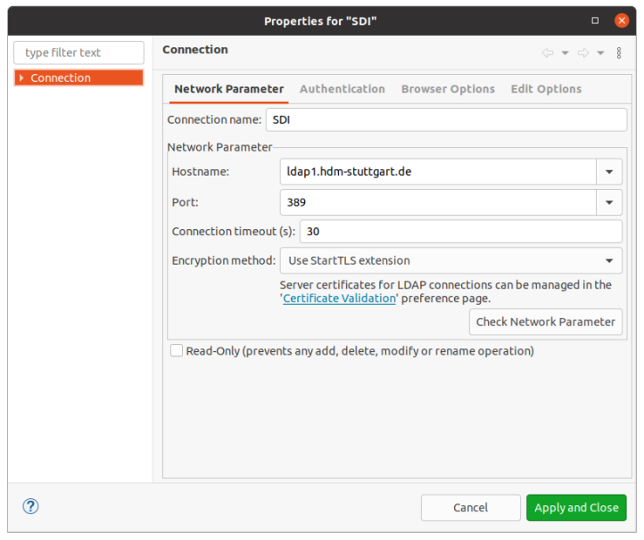
If your connection was successful, your user interface should look somewhat like this:
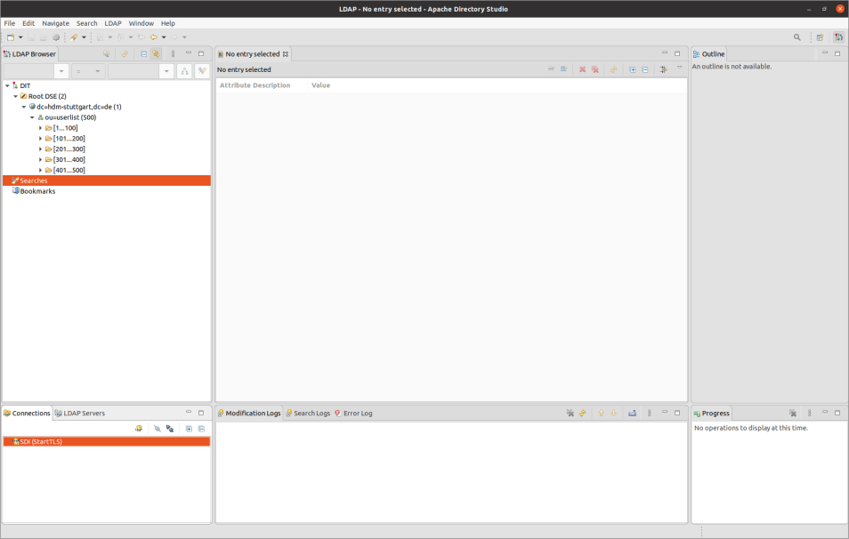
Use a filter like (uid-xy234) to find your personal entry beneath ou=userlist,dc=hdm-stuttgart,dc=de, Use the corresponding DN e.g. uid=xy234, ou=userlist,dc=hdm-stuttgart,dc=de to reconnect using password authentication. Then browse your own entry again. Can you spot any difference?
Therefore, you right-click on the userlist and apply a filter on the children. This should work like displayed in the following two pictures.
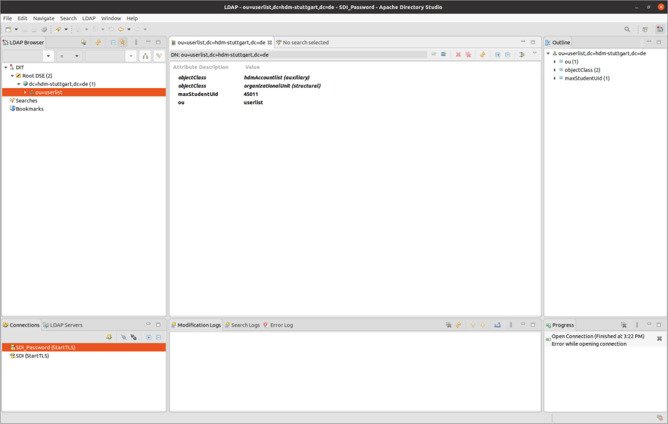
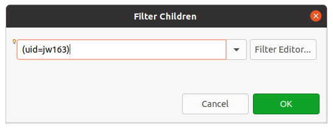
As one can see in the picture below, the entry appears and can be examined further by clicking on it.
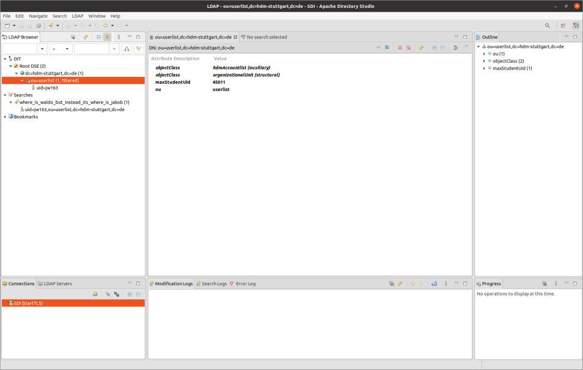
The other option to find ones own entry is to create a search. The content should look somewhat like in the following picture.
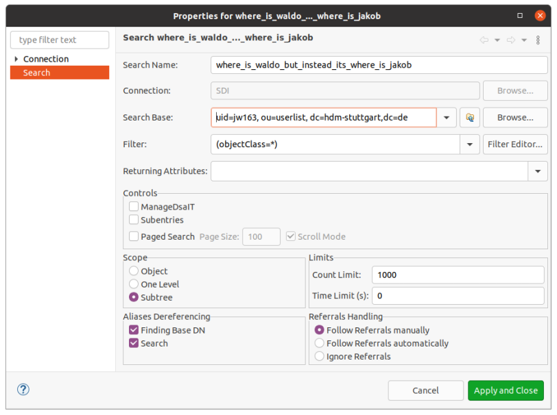
Then ones user should be found and can be examined.
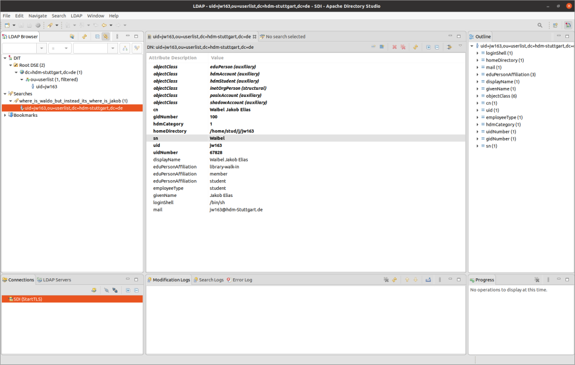
After following the same steps while being logged in, the user entry should look more like in the following picture. As one can see, some more personal information like the hash of the users password or his student-identification number is provided.
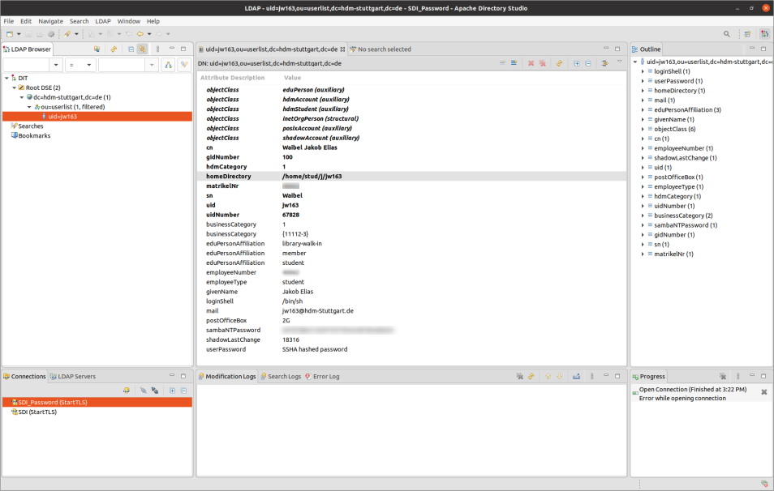
Browsing an existing LDAP Server using ldapsearch
Setup ldapsearch to anonymously connect to ldap1.hdm-stuttgart.de
The following command connects to the LDAP server and displays the information below. The output is a shortened version, as there are too many user entries to display here.
$ ldapsearch -x -b "ou=userlist,dc=hdm-stuttgart,dc=de" -H ldap://ldap1.hdm-stuttgart.de
# gast39, userlist, hdm-stuttgart.de
dn: uid=gast39,ou=userlist,dc=hdm-stuttgart,dc=de
hdmCategory: 4
sn: fixme
loginShell: /bin/sh
uidNumber: 46139
gidNumber: 35102
uid: gast39
objectClass: inetOrgPerson
objectClass: posixAccount
objectClass: shadowAccount
objectClass: hdmAccount
objectClass: hdmSambaDomain
objectClass: eduPerson
cn:: dW5rbm93biA=
homeDirectory: /home/stud/XX/gast39
givenName: Gast
eduPersonAffiliation: faculty
eduPersonAffiliation: library-walk-in
# gast38, userlist, hdm-stuttgart.de
dn: uid=gast38,ou=userlist,dc=hdm-stuttgart,dc=de
hdmCategory: 4
sn: fixme
loginShell: /bin/sh
uidNumber: 46138
gidNumber: 35102
uid: gast38
objectClass: inetOrgPerson
objectClass: posixAccount
objectClass: shadowAccount
objectClass: hdmAccount
objectClass: hdmSambaDomain
objectClass: eduPerson
cn:: dW5rbm93biA=
homeDirectory: /home/stud/XX/gast38
givenName: Gast
eduPersonAffiliation: faculty
eduPersonAffiliation: library-walk-in
Use a filter like (uid-xy234) to find your personal entry beneath ou=userlist,dc=hdm-stuttgart,dc=de, Use the corresponding DN e.g. uid=xy234, ou=userlist,dc=hdm-stuttgart,dc=de to reconnect using password authentication. Then browse your own entry again. Can you spot any difference?
$ ldapsearch -x -b "uid=jw163, ou=userlist,dc=hdm-stuttgart,dc=de" -H ldap://ldap1.hdm-stuttgart.de
# extended LDIF
#
# LDAPv3
# base <uid=jw163, ou=userlist,dc=hdm-stuttgart,dc=de> with scope subtree
# filter: (objectclass=*)
# requesting: ALL
#
# jw163, userlist, hdm-stuttgart.de
dn: uid=jw163,ou=userlist,dc=hdm-stuttgart,dc=de
displayName: Waibel Jakob Elias
employeeType: student
objectClass: hdmAccount
objectClass: hdmStudent
objectClass: inetOrgPerson
objectClass: posixAccount
objectClass: shadowAccount
objectClass: eduPerson
eduPersonAffiliation: member
eduPersonAffiliation: student
eduPersonAffiliation: library-walk-in
uid: jw163
mail: jw163@hdm-Stuttgart.de
uidNumber: 67828
cn: Waibel Jakob Elias
loginShell: /bin/sh
hdmCategory: 1
gidNumber: 100
givenName: Jakob Elias
homeDirectory: /home/stud/j/jw163
sn: Waibel
# search result
search: 2
result: 0 Success
# numResponses: 2
# numEntries: 1
After being logged in, we can spot some more information:
$ ldapsearch -x -D "uid=jw163, ou=userlist,dc=hdm-stuttgart,dc=de" -W -H ldap://ldap1.hdm-stuttgart.de -b " uid=jw163, ou=userlist,dc=hdm-stuttgart,dc=de" -s sub 'uid=jw163'
Enter LDAP Password:
# extended LDIF
#
# LDAPv3
# base < uid=jw163, ou=userlist,dc=hdm-stuttgart,dc=de> with scope subtree
# filter: uid=jw163
# requesting: ALL
#
# jw163, userlist, hdm-stuttgart.de
dn: uid=jw163,ou=userlist,dc=hdm-stuttgart,dc=de
businessCategory: 1
businessCategory: {11112-3}
employeeType: student
postOfficeBox: 2G
objectClass: hdmAccount
objectClass: hdmStudent
objectClass: inetOrgPerson
objectClass: posixAccount
objectClass: shadowAccount
objectClass: eduPerson
eduPersonAffiliation: member
eduPersonAffiliation: student
eduPersonAffiliation: library-walk-in
uid: jw163
mail: jw163@hdm-Stuttgart.de
uidNumber: 67828
cn: Waibel Jakob Elias
loginShell: /bin/sh
hdmCategory: 1
gidNumber: 100
employeeNumber: CENSORED
givenName: Jakob Elias
homeDirectory: /home/stud/j/jw163
sn: Waibel
matrikelNr: CENSORED
userPassword:: CENSORED
shadowLastChange: 18316
sambaNTPassword: CENSORED
# search result
search: 2
result: 0 Success
# numResponses: 2
# numEntries: 1
Setup an OpenLDAP server
First of all, one might use the following commands to install some useful utilities.
# apt install dialog
# apt install slapd
In the following, the admin password is set to password. Please make sure you are using a more secure password than we are when configuring your LDAP server.
With dpkg-reconfigure slapd, you can modify your base configuration. Following the dialog accordingly should lead to a successful result.
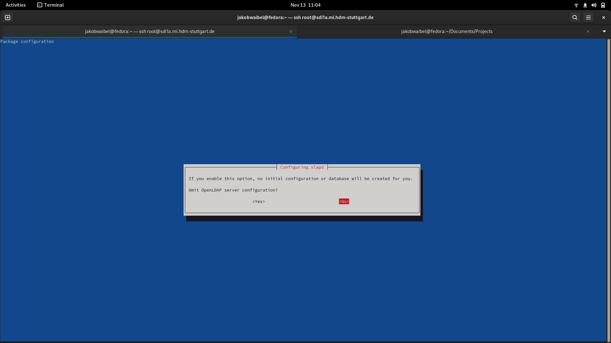
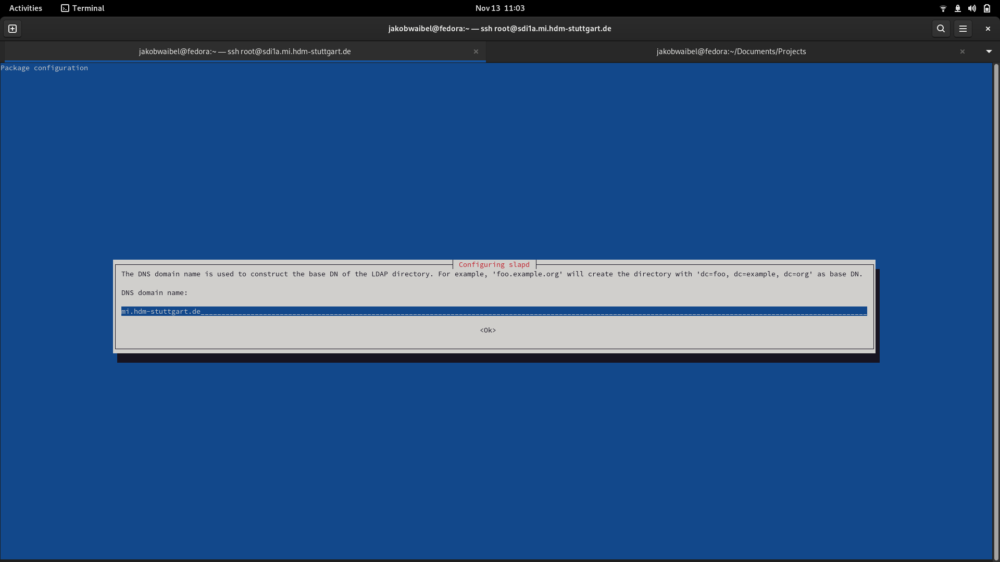
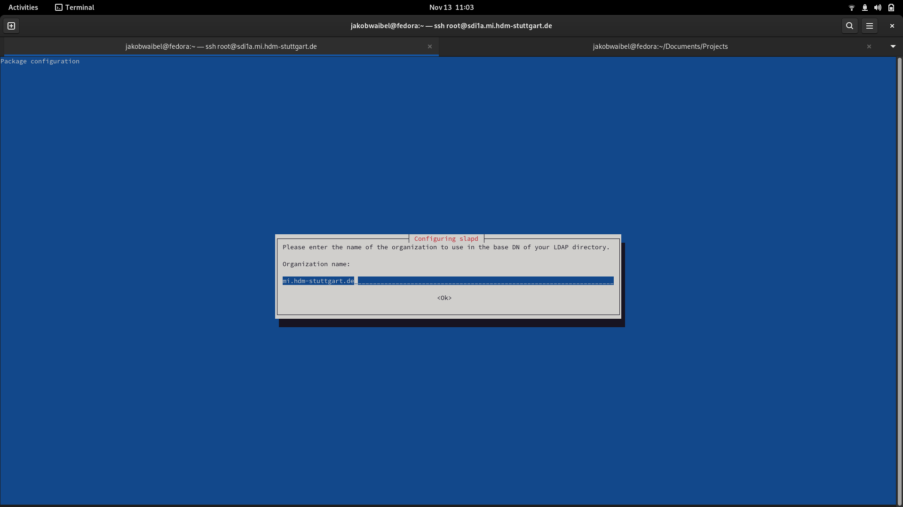
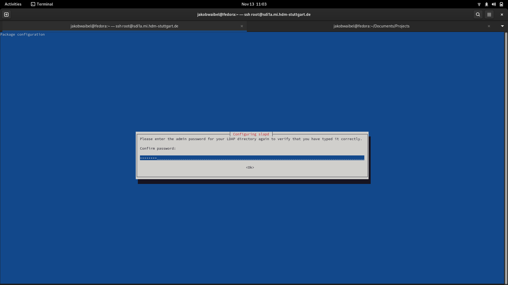
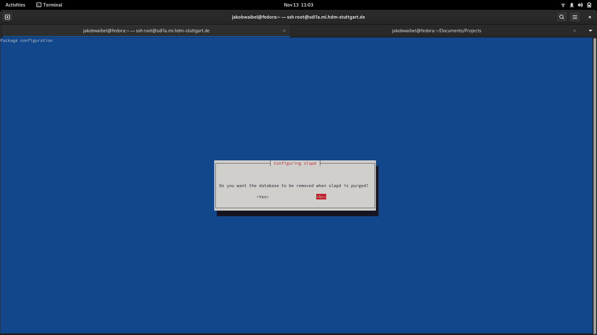
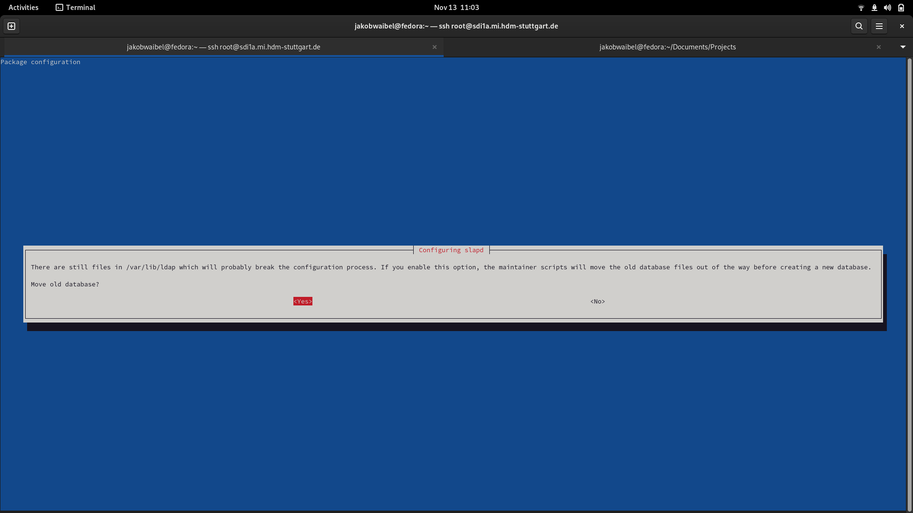
After setting up slapd, we can use ss -tlnp to verify that a server is running.
# ss -tlnp
State Recv-Q Send-Q Local Address:Port Peer Address:Port Process
LISTEN 0 10 141.62.75.101:53 0.0.0.0:* users:(("named",pid=448,fd=19))
LISTEN 0 10 127.0.0.1:53 0.0.0.0:* users:(("named",pid=448,fd=16))
LISTEN 0 128 0.0.0.0:22 0.0.0.0:* users:(("sshd",pid=127,fd=3))
LISTEN 0 4096 127.0.0.1:953 0.0.0.0:* users:(("named",pid=448,fd=21))
LISTEN 0 100 127.0.0.1:25 0.0.0.0:* users:(("master",pid=292,fd=13))
LISTEN 0 1024 0.0.0.0:389 0.0.0.0:* users:(("slapd",pid=7245,fd=8))
LISTEN 0 128 [::]:22 [::]:* users:(("sshd",pid=127,fd=4))
LISTEN 0 100 [::1]:25 [::]:* users:(("master",pid=292,fd=14))
LISTEN 0 1024 [::]:389 [::]:* users:(("slapd",pid=7245,fd=9))
ldapsearch -Q -LLL -Y EXTERNAL -H ldapi:/// -b cn=config dn
dn: cn=config
dn: cn=module{0},cn=config
dn: cn=schema,cn=config
dn: cn={0}core,cn=schema,cn=config
dn: cn={1}cosine,cn=schema,cn=config
dn: cn={2}nis,cn=schema,cn=config
dn: cn={3}inetorgperson,cn=schema,cn=config
dn: olcDatabase={-1}frontend,cn=config
dn: olcDatabase={0}config,cn=config
dn: olcDatabase={1}mdb,cn=config
# ldapwhoami -x
anonymous
As mentioned in the task, we need to rename the dc to betrayer.com. So we just do dpkg-reconfigure slapd another time using the required information.
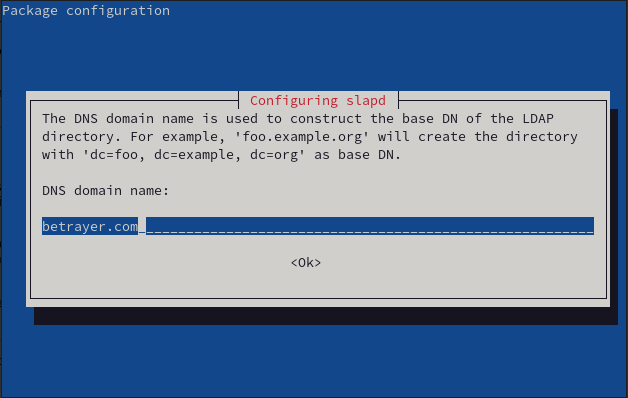
We can now use ldapwhoami with our configuration:
# ldapwhoami -x -D cn=admin,dc=betrayer,dc=com -W
Enter LDAP Password:
dn:cn=admin,dc=betrayer,dc=com
We can connect to our server using Apache Directory Studio with the following configuration.
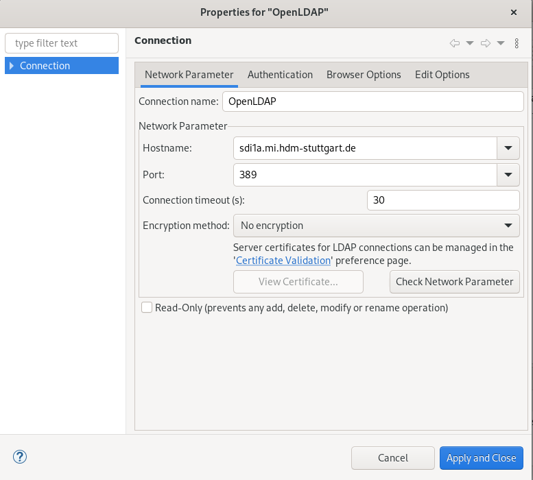
To authorize as an administrator, we just use our admin credentials.
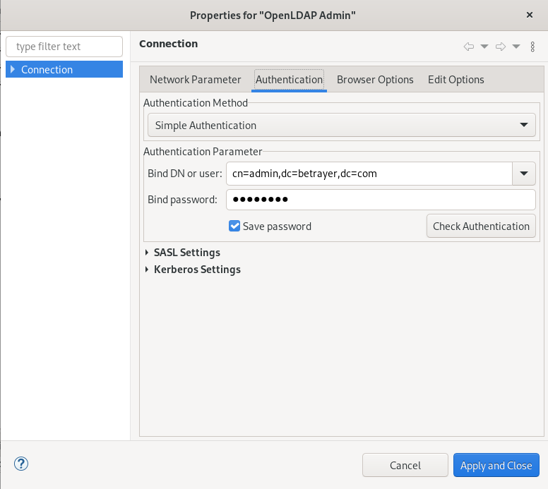
Populating your DIT
After creating our LDAP tree, it looks like this:
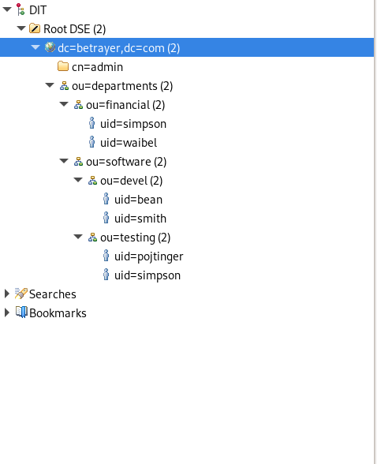
Our export dump looks like this:
version: 1
dn: dc=betrayer,dc=com
objectClass: dcObject
objectClass: organization
objectClass: top
dc: betrayer
o: betrayer.com
dn: cn=admin,dc=betrayer,dc=com
objectClass: organizationalRole
objectClass: simpleSecurityObject
cn: admin
userPassword:: e1NTSEF9cEhFK0VQT0cyZ3lSeU9nanZGcXNXT2I1ekdzR2w5Q0Q=
description: LDAP administrator
dn: ou=departments,dc=betrayer,dc=com
objectClass: organizationalUnit
objectClass: top
ou: departments
dn: ou=software,ou=departments,dc=betrayer,dc=com
objectClass: organizationalUnit
objectClass: top
ou: software
dn: ou=financial,ou=departments,dc=betrayer,dc=com
objectClass: organizationalUnit
objectClass: top
ou: financial
dn: ou=devel,ou=software,ou=departments,dc=betrayer,dc=com
objectClass: organizationalUnit
objectClass: top
ou: devel
dn: ou=testing,ou=software,ou=departments,dc=betrayer,dc=com
objectClass: organizationalUnit
objectClass: top
ou: testing
dn: uid=bean,ou=devel,ou=software,ou=departments,dc=betrayer,dc=com
objectClass: inetOrgPerson
objectClass: organizationalPerson
objectClass: person
objectClass: top
cn: Audrey Bean
sn: Bean
givenName: Audrey
mail: bean@betrayer.com
uid: bean
userPassword:: e3NtZDV9YVhKL2JlVkF2TDRENk9pMFRLcDhjM3ovYTZQZzBXeHA=
dn: uid=smith,ou=devel,ou=software,ou=departments,dc=betrayer,dc=com
objectClass: inetOrgPerson
objectClass: organizationalPerson
objectClass: person
objectClass: top
cn: Jane Smith
sn: Smith
givenName: Jane
mail: smith@betrayer.com
uid: smith
userPassword:: e3NtZDV9YVhKL2JlVkF2TDRENk9pMFRLcDhjM3ovYTZQZzBXeHA=
dn: uid=waibel,ou=financial,ou=departments,dc=betrayer,dc=com
objectClass: inetOrgPerson
objectClass: organizationalPerson
objectClass: person
objectClass: top
cn: Jakob Waibel
sn: Waibel
givenName: Jakob
mail: waibel@betrayer.com
uid: waibel
userPassword:: e3NtZDV9YVhKL2JlVkF2TDRENk9pMFRLcDhjM3ovYTZQZzBXeHA=
dn: uid=simpson,ou=financial,ou=departments,dc=betrayer,dc=com
objectClass: inetOrgPerson
objectClass: organizationalPerson
objectClass: person
objectClass: top
cn: Homer Simpson
sn: Simpson
givenName: Homer
mail: simpson@betrayer.com
uid: simpson
userPassword:: e3NtZDV9YVhKL2JlVkF2TDRENk9pMFRLcDhjM3ovYTZQZzBXeHA=
dn: uid=pojtinger,ou=testing,ou=software,ou=departments,dc=betrayer,dc=com
objectClass: inetOrgPerson
objectClass: organizationalPerson
objectClass: person
objectClass: top
cn: Felix Pojtinger
sn: Pojtinger
givenName: Felix
mail: pojtinger@betrayer.com
uid: pojtinger
userPassword:: e3NtZDV9YVhKL2JlVkF2TDRENk9pMFRLcDhjM3ovYTZQZzBXeHA=
dn: uid=simpson,ou=testing,ou=software,ou=departments,dc=betrayer,dc=com
objectClass: inetOrgPerson
objectClass: organizationalPerson
objectClass: person
objectClass: top
cn: Maggie Simpson
sn: Simpson
givenName: Maggie
mail: simpson@betrayer.com
uid: simpson
userPassword:: e3NtZDV9YVhKL2JlVkF2TDRENk9pMFRLcDhjM3ovYTZQZzBXeHA=
Testing a bind operation as non-admin user
First we set a password for bean. In our case, we set the password to password.
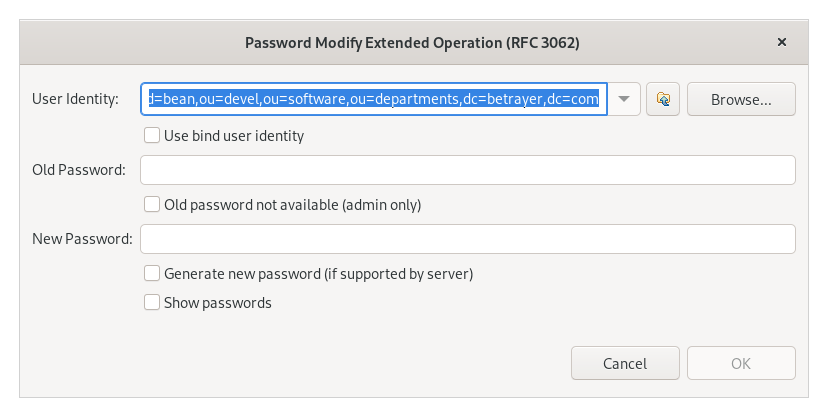
Afterwards we create a new connection with the following properties for the authentication section:
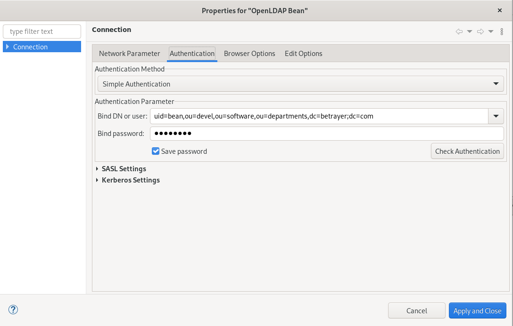
After that, our new connection looks like this:
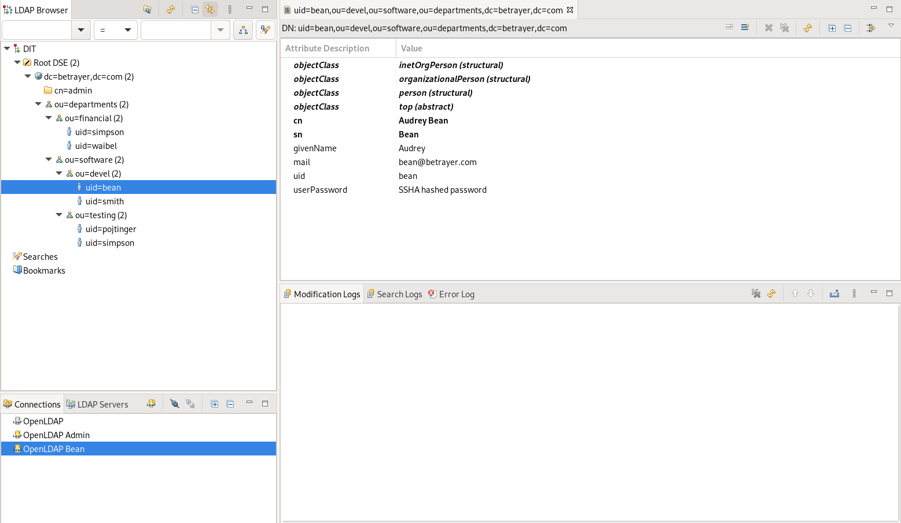
Extending an existing entry
To extend an existing entry and to add a posixAccount, one needs to right-click on the objectClass attribute and click on New Value.
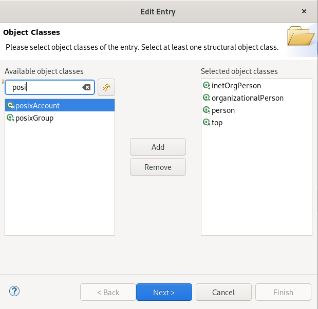
After that look for the posixAccount like displayed in the screenshot and Add it so it appears in the right column. After clicking Next, one needs to specify a valid gidNumber, homeDirectory and uidNumber. Now complete the configuration by clicking on Finish.
Filter based search
All users with a uid attribute value starting with the letter “b”.
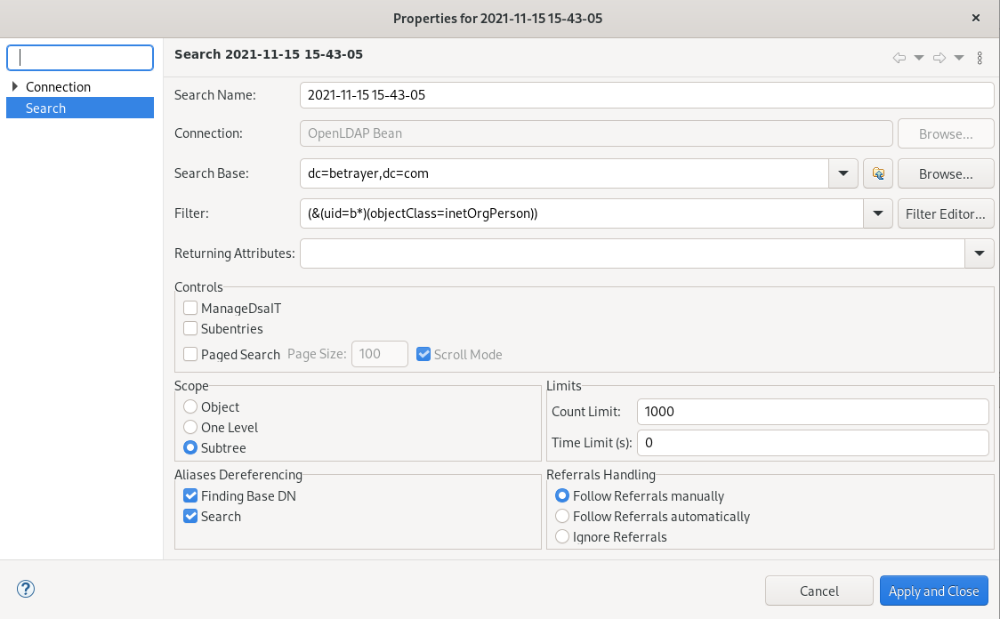
All entries either with either a defined uid attribute or a ou attribute starting with letter “d”.
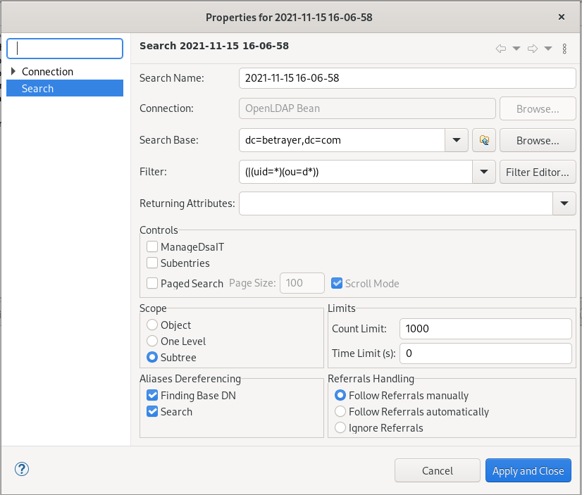
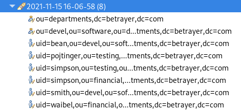
All users entries within the whole DIT having a gidNumber value of 100.
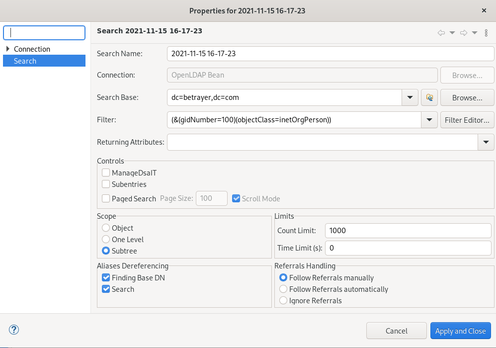
All user entries belonging to the billing department having a uid value greater than 1023.
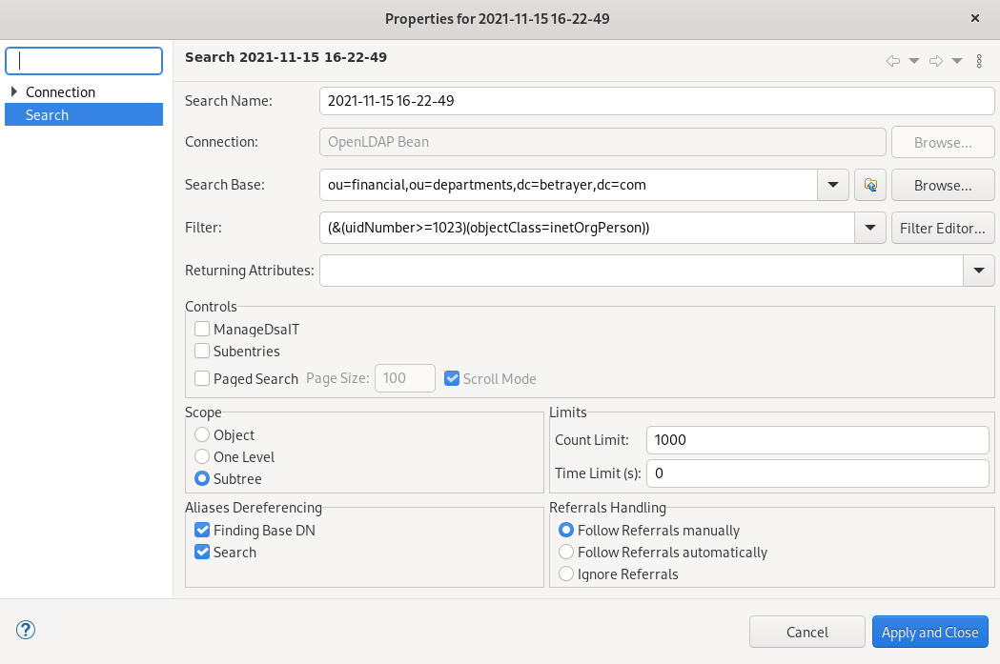
All user entries within the whole DIT having a commonName containing the substring “ei”.
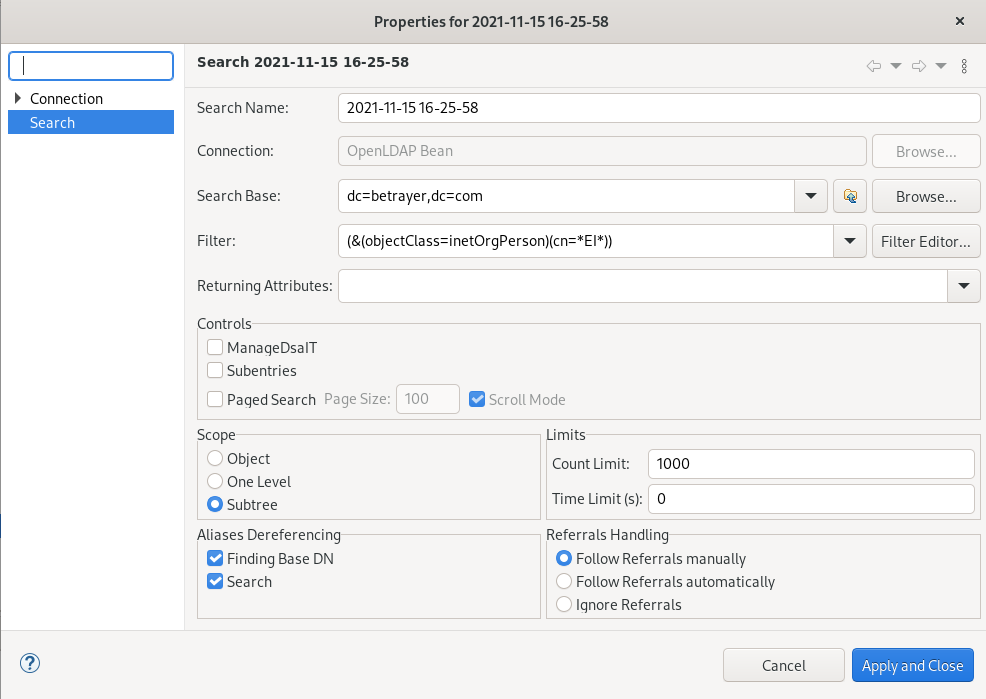
All user entries within the whole DIT belonging to gidNumber == 100 or having a uid value starting with letter “t”.
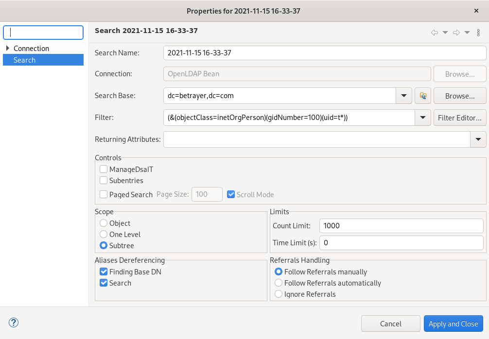
Accessing LDAP data by a mail client
To use LDAP data with a mail client, it is necessary to add a new address book. It's configuration is displayed in the picture below:
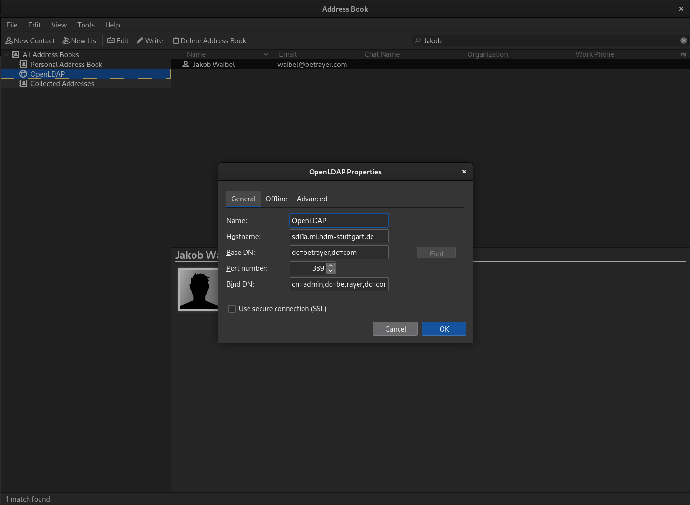
After configuring the address book, addresses are only available when searching. As shown in the following picture, we can now find the fictional characters we created when populating our tree.
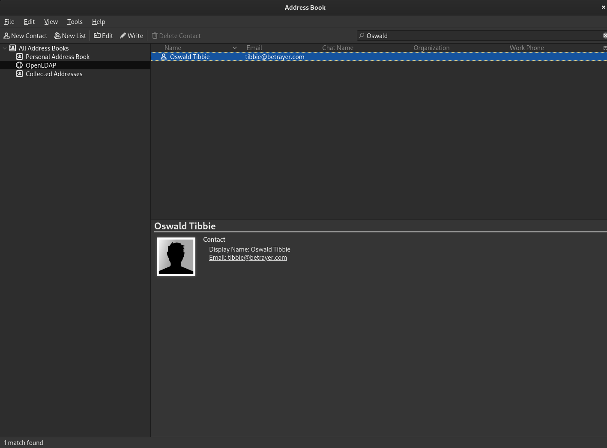
LDAP configuration
# ldapsearch -Y EXTERNAL -H ldapi:/// -b cn=config
SASL/EXTERNAL authentication started
SASL username: gidNumber=0+uidNumber=0,cn=peercred,cn=external,cn=auth
SASL SSF: 0
# extended LDIF
#
# LDAPv3
# base <cn=config> with scope subtree
# filter: (objectclass=*)
# requesting: ALL
#
# config
dn: cn=config
objectClass: olcGlobal
cn: config
olcArgsFile: /var/run/slapd/slapd.args
olcLogLevel: none
olcPidFile: /var/run/slapd/slapd.pid
olcToolThreads: 1
# module{0}, config
dn: cn=module{0},cn=config
objectClass: olcModuleList
cn: module{0}
olcModulePath: /usr/lib/ldap
olcModuleLoad: {0}back_mdb
# schema, config
dn: cn=schema,cn=config
objectClass: olcSchemaConfig
cn: schema
olcObjectIdentifier: OLcfg 1.3.6.1.4.1.4203.1.12.2
olcObjectIdentifier: OLcfgAt OLcfg:3
olcObjectIdentifier: OLcfgGlAt OLcfgAt:0
...
olcDatabase: {-1}frontend
olcAccess: {0}to * by dn.exact=gidNumber=0+uidNumber=0,cn=peercred,cn=external
,cn=auth manage by * break
olcAccess: {1}to dn.exact="" by * read
olcAccess: {2}to dn.base="cn=Subschema" by * read
olcSizeLimit: 500
# {0}config, config
dn: olcDatabase={0}config,cn=config
objectClass: olcDatabaseConfig
olcDatabase: {0}config
olcAccess: {0}to * by dn.exact=gidNumber=0+uidNumber=0,cn=peercred,cn=external
,cn=auth manage by * break
olcRootDN: cn=admin,cn=config
# {1}mdb, config
dn: olcDatabase={1}mdb,cn=config
objectClass: olcDatabaseConfig
objectClass: olcMdbConfig
olcDatabase: {1}mdb
olcDbDirectory: /var/lib/ldap
olcSuffix: dc=betrayer,dc=com
olcAccess: {0}to attrs=userPassword by self write by anonymous auth by * none
olcAccess: {1}to attrs=shadowLastChange by self write by * read
olcAccess: {2}to * by * read
olcLastMod: TRUE
olcRootDN: cn=admin,dc=betrayer,dc=com
olcRootPW: {SSHA}0mF0mX3FUNd0zZ0u3bKPQQA1ubycnHvh
olcDbCheckpoint: 512 30
olcDbIndex: objectClass eq
olcDbIndex: cn,uid eq
olcDbIndex: uidNumber,gidNumber eq
olcDbIndex: member,memberUid eq
olcDbMaxSize: 1073741824
# search result
search: 2
result: 0 Success
# numResponses: 11
# numEntries: 10
As mentioned in the task, we find the required information near the end of the output. In the first occurence of oldRootDN, where olcRootDN: cn=admin,cn=config, no passwort is set afterwards. In the second occurence olcRootDN=cn=admin,dc=betrayer,dc=com, a password is set with oldRootPW. This password not being specified implies that configuration access is limited to localhost.
To change these settings, we must create a LDIF file which sets the required properties. A password hash can be generated using a website like: https://projects.marsching.org/weave4j/util/genpassword.php. We chose to use the password password again.
# cat add_olcRootPW.ldif
dn: olcDatabase={0}config,cn=config
replace: olcRootPW
olcRootPW: {ssha}U1oLsngiAsXhFQrav5UzHxn2/9qPNcL+
# ldapmodify -Q -Y EXTERNAL -H ldapi:/// -f ~/add_olcRootPW.ldif
modifying entry "olcDatabase={0}config,cn=config"
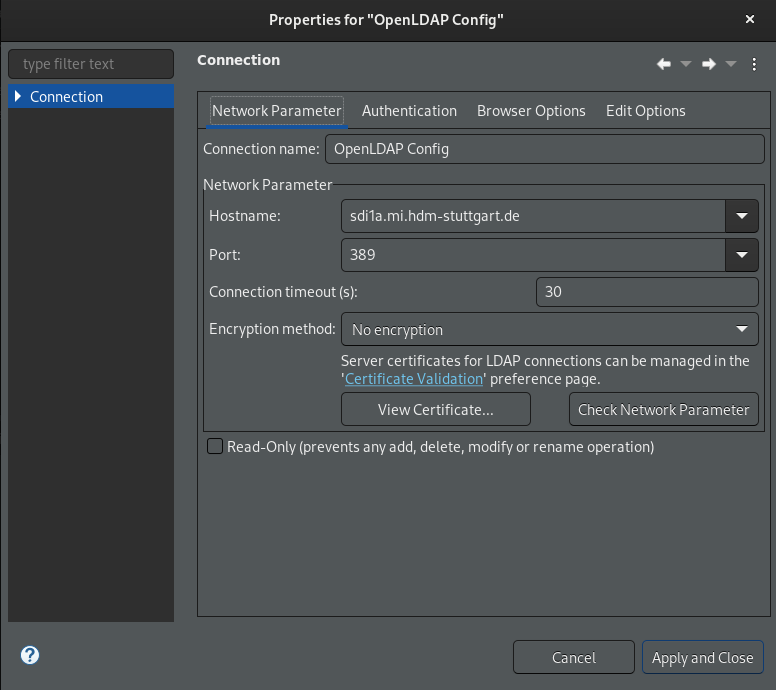
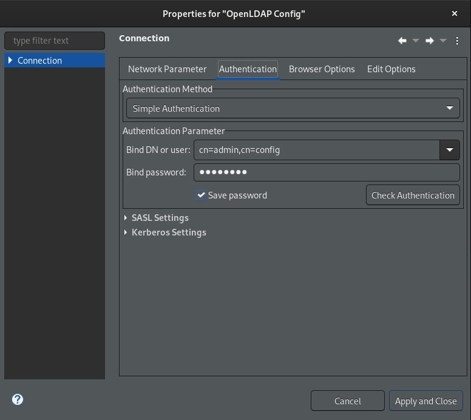
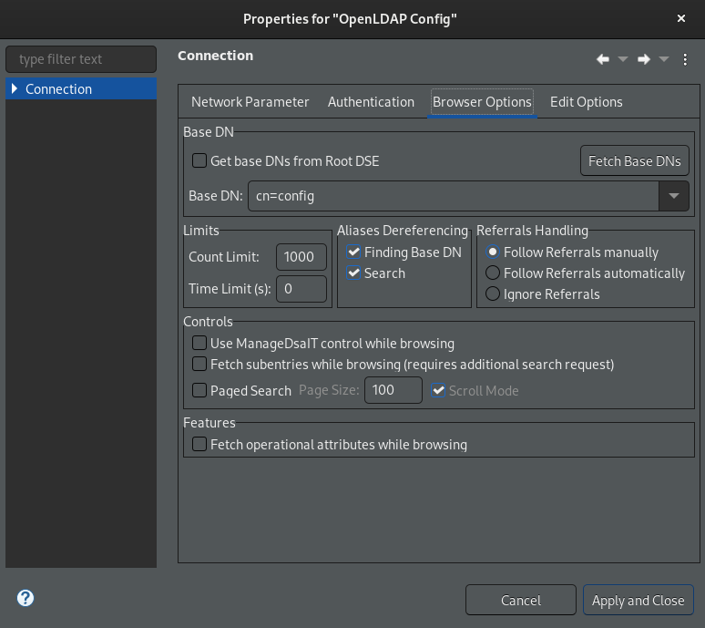
After connecting, we can set the olcLogLevel. There are multiple options to set the log level to. We decided to get the most information possible, which is achieved by using the olcLogLevel of -1.
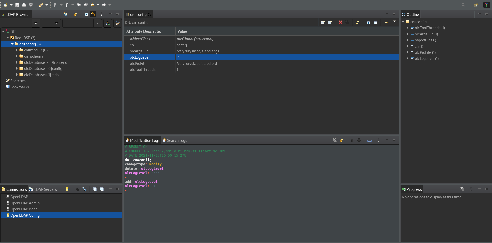
Now we can look at the syslog with cat /var/log/syslog.
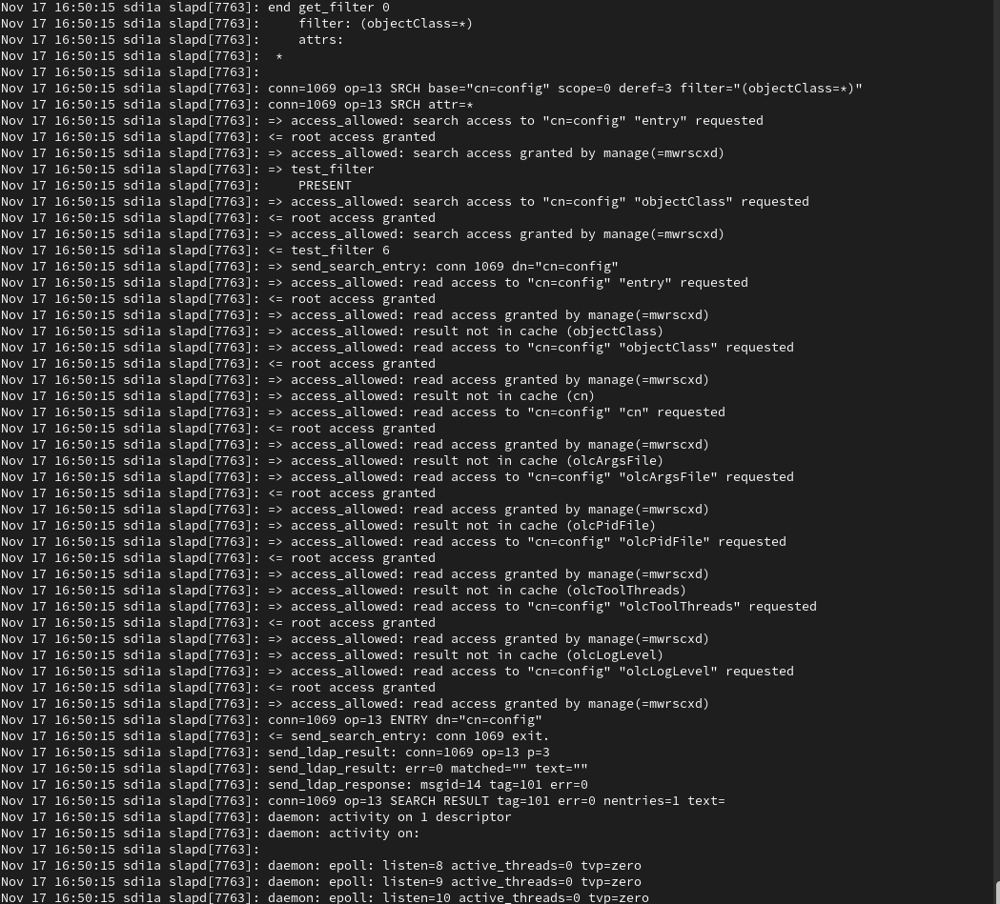
LDAP based user login
First, we create a backup of our working PAM configuration.
cd /etc
tar zcf /root/pam.tgz pam.conf pam.d
We can then check if everything worked properly:
# tar ztf /root/pam.tgz
pam.conf
pam.d/
pam.d/passwd
pam.d/sshd
pam.d/common-auth
pam.d/common-session-noninteractive
pam.d/runuser-l
pam.d/su
pam.d/other
pam.d/su-l
pam.d/cron
pam.d/runuser
pam.d/common-password
pam.d/chpasswd
pam.d/common-session
pam.d/chsh
pam.d/login
pam.d/common-account
pam.d/newusers
pam.d/chfn
Install libpam-ldapd via apt install libpam-ldapd.
Configure the server like displayed in the following screenshots.
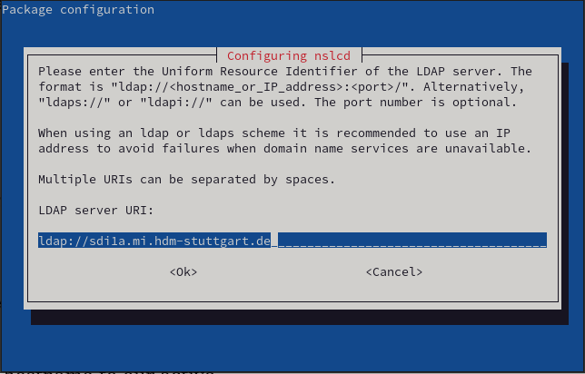
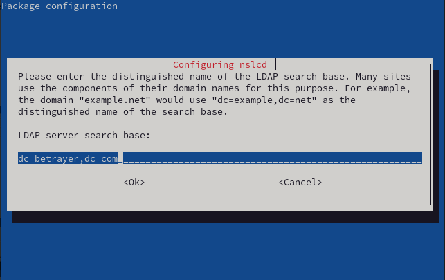
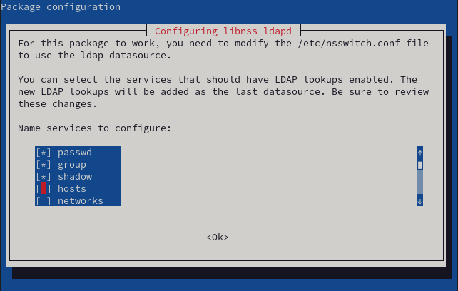
Then we reboot our server and continue the configuration.
Test your LDAP setup:
# id waibel
uid=1337(waibel) gid=100(users) groups=100(users)
Edit the passwd, group and shadow line in your /etc/nsswitch.conf so that they look similar than in our configuration:
# cat /etc/nsswitch.conf
# /etc/nsswitch.conf
#
# Example configuration of GNU Name Service Switch functionality.
# If you have the `glibc-doc-reference' and `info' packages installed, try:
# `info libc "Name Service Switch"' for information about this file.
passwd: files ldap
group: files ldap
shadow: files ldap
gshadow: files
hosts: files dns
networks: files
protocols: db files
services: db files
ethers: db files
rpc: db files
netgroup: nis
Make sure that PasswordAuthentication is set to no in /etc/ssh/sshd_config:
# cat /etc/ssh/sshd_config
# $OpenBSD: sshd_config,v 1.103 2018/04/09 20:41:22 tj Exp $
# This is the sshd server system-wide configuration file. See
# sshd_config(5) for more information.
# This sshd was compiled with PATH=/usr/bin:/bin:/usr/sbin:/sbin
# The strategy used for options in the default sshd_config shipped with
# OpenSSH is to specify options with their default value where
# possible, but leave them commented. Uncommented options override the
# default value.
Include /etc/ssh/sshd_config.d/*.conf
#Port 22
#AddressFamily any
#ListenAddress 0.0.0.0
#ListenAddress ::
#HostKey /etc/ssh/ssh_host_rsa_key
#HostKey /etc/ssh/ssh_host_ecdsa_key
#HostKey /etc/ssh/ssh_host_ed25519_key
# Ciphers and keying
#RekeyLimit default none
# Logging
#SyslogFacility AUTH
#LogLevel INFO
# Authentication:
#LoginGraceTime 2m
#PermitRootLogin prohibit-password
#StrictModes yes
#MaxAuthTries 6
#MaxSessions 10
#PubkeyAuthentication yes
# Expect .ssh/authorized_keys2 to be disregarded by default in future.
#AuthorizedKeysFile .ssh/authorized_keys .ssh/authorized_keys2
#AuthorizedPrincipalsFile none
#AuthorizedKeysCommand none
#AuthorizedKeysCommandUser nobody
# For this to work you will also need host keys in /etc/ssh/ssh_known_hosts
#HostbasedAuthentication no
# Change to yes if you don't trust ~/.ssh/known_hosts for
# HostbasedAuthentication
#IgnoreUserKnownHosts no
# Don't read the user's ~/.rhosts and ~/.shosts files
#IgnoreRhosts yes
# To disable tunneled clear text passwords, change to no here!
PasswordAuthentication no
#PermitEmptyPasswords no
# Change to yes to enable challenge-response passwords (beware issues with
# some PAM modules and threads)
ChallengeResponseAuthentication no
# Kerberos options
#KerberosAuthentication no
#KerberosOrLocalPasswd yes
#KerberosTicketCleanup yes
#KerberosGetAFSToken no
# GSSAPI options
#GSSAPIAuthentication no
#GSSAPICleanupCredentials yes
#GSSAPIStrictAcceptorCheck yes
#GSSAPIKeyExchange no
# Set this to 'yes' to enable PAM authentication, account processing,
# and session processing. If this is enabled, PAM authentication will
# be allowed through the ChallengeResponseAuthentication and
# PasswordAuthentication. Depending on your PAM configuration,
# PAM authentication via ChallengeResponseAuthentication may bypass
# the setting of "PermitRootLogin without-password".
# If you just want the PAM account and session checks to run without
# PAM authentication, then enable this but set PasswordAuthentication
# and ChallengeResponseAuthentication to 'no'.
UsePAM yes
#AllowAgentForwarding yes
#AllowTcpForwarding yes
#GatewayPorts no
X11Forwarding yes
#X11DisplayOffset 10
#X11UseLocalhost yes
#PermitTTY yes
PrintMotd no
#PrintLastLog yes
#TCPKeepAlive yes
#PermitUserEnvironment no
#Compression delayed
#ClientAliveInterval 0
#ClientAliveCountMax 3
#UseDNS no
#PidFile /var/run/sshd.pid
#MaxStartups 10:30:100
#PermitTunnel no
#ChrootDirectory none
#VersionAddendum none
# no default banner path
#Banner none
# Allow client to pass locale environment variables
AcceptEnv LANG LC_*
# override default of no subsystems
Subsystem sftp /usr/lib/openssh/sftp-server
# Example of overriding settings on a per-user basis
#Match User anoncvs
# X11Forwarding no
# AllowTcpForwarding no
# PermitTTY no
# ForceCommand cvs server
To make sure the results are not influenced by unwanted caching, we stop the nscd service.
# systemctl stop nscd
# systemctl status nscd
● nscd.service - Name Service Cache Daemon
Loaded: loaded (/lib/systemd/system/nscd.service; enabled; vendor preset:>
Active: inactive (dead) since Wed 2021-11-17 21:26:35 CET; 4s ago
Process: 77 ExecStart=/usr/sbin/nscd (code=exited, status=0/SUCCESS)
Process: 364 ExecStop=/usr/sbin/nscd --shutdown (code=exited, status=0/SUC>
Main PID: 80 (code=exited, status=0/SUCCESS)
Nov 17 21:17:27 sdi1b nscd[80]: 80 monitoring directory `/etc` (2)
Nov 17 21:17:27 sdi1b nscd[80]: 80 monitoring file `/etc/services` (6)
Nov 17 21:17:27 sdi1b nscd[80]: 80 monitoring directory `/etc` (2)
Nov 17 21:17:27 sdi1b nscd[80]: 80 disabled inotify-based monitoring for file >
Nov 17 21:17:27 sdi1b nscd[80]: 80 stat failed for file `/etc/netgroup'; will >
Nov 17 21:17:27 sdi1b systemd[1]: Started Name Service Cache Daemon.
Nov 17 21:17:46 sdi1b nscd[80]: 80 checking for monitored file `/etc/netgroup'>
Nov 17 21:26:35 sdi1b systemd[1]: Stopping Name Service Cache Daemon...
Nov 17 21:26:35 sdi1b systemd[1]: nscd.service: Succeeded.
Nov 17 21:26:35 sdi1b systemd[1]: Stopped Name Service Cache Daemon.
With mkhomedir_helper waibel, we create a new homedirectory and modify the access rights. The result should look somewhat like this:
drwxr-xr-x 2 waibel users 5 Nov 17 21:32 jakob
# id waibel
uid=1337(waibel) gid=100(users) groups=100(users)
Backup and recovery/restore
First, we setup a second LDAP server on sdi1b.mi.hdm-stuttgart.de.
Now we dump the configuration and the data into ldif files.
# slapcat -b cn=config -l ldap-config.ldif
# slapcat -l ldap-data.ldif
After creating an ssh-key on sdi1a and adding its public key to the authorized_keys file on sdi1b we can use scp to transfer the files from sdi1a to sdi1b.
# scp {ldap-config.ldif,ldap-data.ldif} root@sdi1b.mi.hdm-stuttgart.de:~
ldap-config.ldif 100% 38KB 18.0MB/s 00:00
ldap-data.ldif 100% 7977 19.0MB/s 00:00
On sdi1b we stop the slapd service with systemctl stop slapd and we restore the configuration and data using slapadd:
# slapadd -b cn=config -l ~/ldap-config.ldif -F /etc/ldap/slapd.d/
# slapadd -n 1 -l ~/ldap-data.ldif -F /etc/ldap/slapd.d/
To ensure everything worked, we create a new ldif file based on the data on the backup server. Afterwards, the new ldif file can be displayed and we can see that everything worked.
# slapcat -l ldap-data-b.ldif
# cat ldap-data-b.ldif
dn: dc=betrayer,dc=com
structuralObjectClass: organization
entryUUID: 1c2b9bf0-d8b8-103b-9330-2bdbf336837c
creatorsName: cn=admin,dc=betrayer,dc=com
createTimestamp: 20211113102755Z
objectClass: organization
objectClass: dcObject
objectClass: top
dc: betrayer
o: betrayer.com
entryCSN: 20211115133040.851821Z#000000#000#000000
modifiersName: cn=admin,dc=betrayer,dc=com
modifyTimestamp: 20211115133040Z
dn: cn=admin,dc=betrayer,dc=com
description: LDAP administrator
cn: admin
objectClass: organizationalRole
objectClass: simpleSecurityObject
userPassword:: e1NTSEF9cEhFK0VQT0cyZ3lSeU9nanZGcXNXT2I1ekdzR2w5Q0Q=
structuralObjectClass: organizationalRole
entryUUID: f89e4158-da63-103b-9b6b-03efa5ff8503
creatorsName: cn=admin,dc=betrayer,dc=com
createTimestamp: 20211115133040Z
entryCSN: 20211115133040.866711Z#000000#000#000000
modifiersName: cn=admin,dc=betrayer,dc=com
modifyTimestamp: 20211115133040Z
dn: ou=departments,dc=betrayer,dc=com
ou: departments
objectClass: top
objectClass: organizationalUnit
structuralObjectClass: organizationalUnit
entryUUID: f89f5066-da63-103b-9b6c-03efa5ff8503
creatorsName: cn=admin,dc=betrayer,dc=com
createTimestamp: 20211115133040Z
entryCSN: 20211115133040.873650Z#000000#000#000000
modifiersName: cn=admin,dc=betrayer,dc=com
modifyTimestamp: 20211115133040Z
dn: ou=software,ou=departments,dc=betrayer,dc=com
ou: software
objectClass: top
objectClass: organizationalUnit
structuralObjectClass: organizationalUnit
entryUUID: f8a05240-da63-103b-9b6d-03efa5ff8503
creatorsName: cn=admin,dc=betrayer,dc=com
createTimestamp: 20211115133040Z
entryCSN: 20211115133040.880251Z#000000#000#000000
modifiersName: cn=admin,dc=betrayer,dc=com
modifyTimestamp: 20211115133040Z
...
Accessing LDAP by a Go application
package main
import (
"flag"
"fmt"
"log"
"github.com/go-ldap/ldap"
)
func main() {
uid := flag.String("uid", "", "User-Id e.g. jw163")
password := flag.String("pw", "", "Password e.g. password")
flag.Parse()
ldapURL := "ldaps://ldap1.mi.hdm-stuttgart.de"
l, err := ldap.DialURL(ldapURL)
if err != nil {
log.Fatal(err)
}
defer l.Close()
err = l.Bind(fmt.Sprintf("uid=%s, ou=userlist,dc=hdm-stuttgart,dc=de", *uid), *password)
if err != nil {
log.Fatal(err)
}
BaseDN := "dc=hdm-stuttgart,dc=de"
Filter := fmt.Sprintf("(uid=%s)", *uid)
searchReq := ldap.NewSearchRequest(
BaseDN,
ldap.ScopeWholeSubtree,
ldap.NeverDerefAliases,
0,
0,
false,
Filter,
[]string{},
nil,
)
result, err := l.Search(searchReq)
if err != nil {
log.Fatal(err)
}
if len(result.Entries) > 0 {
result.PrettyPrint(4)
} else {
fmt.Println("Couldn't fetch search entries")
}
}
When executing the program, the output looks like this:
$ go run main.go --uid=jw163 --pw=CENSORED
DN: uid=jw163,ou=userlist,dc=hdm-stuttgart,dc=de
objectClass: [hdmAccount hdmStudent inetOrgPerson posixAccount shadowAccount eduPerson]
uid: [jw163]
mail: [jw163@hdm-Stuttgart.de]
uidNumber: [67828]
cn: [Waibel Jakob Elias]
loginShell: [/bin/sh]
hdmCategory: [1]
gidNumber: [100]
givenName: [Jakob Elias]
homeDirectory: [/home/stud/j/jw163]
sn: [Waibel]
matrikelNr: [40062]
Apache
The Apache HTTP Server is a free and open-source cross-platform web server software1.
From Wikipedia, last checked 2022-02-19 (https://en.wikipedia.org/wiki/Apache_HTTP_Server)
Apache Docs
ssh jean@sdi-1.alphahorizon.io
sudo apt update
sudo apt install -y apache2 tree
sudo tee /etc/apache2/ports.conf <<'EOT'
Listen 8080
EOT
sudo systemctl enable --now apache2
sudo systemctl restart apache2
curl https://apache.sdi-1.alphahorizon.io/ # Test Apache's default page
sudo tree -T "Example Index" -H '.' -o /var/www/html/index.html /var/www/html # Replace the default file with a file listing
curl https://apache.sdi-1.alphahorizon.io/ # Test the generated index
sudo mkdir -p /var/www/sdidoc
sudo tree -T "Example Index For sdidoc" -H '.' -o /var/www/sdidoc/index.html /var/www/html # Create a secondary listing for the alias
sudo tee /etc/apache2/sites-available/apache.sdi-1.alphahorizon.io.conf <<'EOT'
<VirtualHost *:8080>
ServerName sdi-1.alphahorizon.io
ServerAlias apache.sdi-1.alphahorizon.io
ServerAdmin webmaster@alphahorizon.io
DocumentRoot /var/www/html
ErrorLog ${APACHE_LOG_DIR}/error.log
CustomLog ${APACHE_LOG_DIR}/access.log combined
<Directory "/var/www/html">
Options Indexes FollowSymLinks
AllowOverride None
Require all granted
</Directory>
Alias /sdidoc /var/www/sdidoc
<Directory "/var/www/sdidoc">
Options Indexes FollowSymLinks
AllowOverride None
Require all granted
</Directory>
</VirtualHost>
EOT
sudo a2dissite 000-default.conf
sudo a2ensite apache.sdi-1.alphahorizon.io
sudo systemctl reload apache2
curl https://apache.sdi-1.alphahorizon.io/sdidoc/ # Test the generated index in `/sdidoc`
sudo apt install -y apache2-doc
curl https://apache.sdi-1.alphahorizon.io/manual/en/index.html # Access the installed docs; this applies to all virtual hosts
sudo mkdir -p /var/www/marx.apache.sdi-1.alphahorizon.io
echo '<h1>Marx</h1>' | sudo tee /var/www/marx.apache.sdi-1.alphahorizon.io/index.html
sudo tee /etc/apache2/sites-available/marx.apache.sdi-1.alphahorizon.io.conf <<'EOT'
<VirtualHost *:8080>
ServerName sdi-1.alphahorizon.io
ServerAlias marx.apache.sdi-1.alphahorizon.io
ServerAdmin webmaster@alphahorizon.io
DocumentRoot /var/www/marx.apache.sdi-1.alphahorizon.io
ErrorLog ${APACHE_LOG_DIR}/error.log
CustomLog ${APACHE_LOG_DIR}/access.log combined
<Directory "/var/www/marx.apache.sdi-1.alphahorizon.io">
Options Indexes FollowSymLinks
AllowOverride None
Require all granted
</Directory>
</VirtualHost>
EOT
sudo a2ensite marx.apache.sdi-1.alphahorizon.io
sudo systemctl reload apache2
curl https://marx.apache.sdi-1.alphahorizon.io/ # Test the Marx site
sudo mkdir -p /var/www/kropotkin.apache.sdi-1.alphahorizon.io
echo '<h1>Kropotkin</h1>' | sudo tee /var/www/kropotkin.apache.sdi-1.alphahorizon.io/index.html
sudo tee /etc/apache2/sites-available/kropotkin.apache.sdi-1.alphahorizon.io.conf <<'EOT'
<VirtualHost *:8080>
ServerName sdi-1.alphahorizon.io
ServerAlias kropotkin.apache.sdi-1.alphahorizon.io
ServerAdmin webmaster@alphahorizon.io
DocumentRoot /var/www/kropotkin.apache.sdi-1.alphahorizon.io
ErrorLog ${APACHE_LOG_DIR}/error.log
CustomLog ${APACHE_LOG_DIR}/access.log combined
<Directory "/var/www/kropotkin.apache.sdi-1.alphahorizon.io">
Options Indexes FollowSymLinks
AllowOverride None
Require all granted
</Directory>
</VirtualHost>
EOT
sudo a2ensite kropotkin.apache.sdi-1.alphahorizon.io
sudo systemctl reload apache2
curl https://kropotkin.apache.sdi-1.alphahorizon.io/ # Test the Kropotkin site
sudo mkdir -p /var/www/secure.apache.sdi-1.alphahorizon.io
echo '<h1>Super secure content!</h1>' | sudo tee /var/www/secure.apache.sdi-1.alphahorizon.io/index.html
sudo tee /etc/apache2/sites-available/secure.apache.sdi-1.alphahorizon.io.conf <<'EOT'
<VirtualHost *:8080>
ServerName sdi-1.alphahorizon.io
ServerAlias secure.apache.sdi-1.alphahorizon.io
ServerAdmin webmaster@alphahorizon.io
DocumentRoot /var/www/secure.apache.sdi-1.alphahorizon.io
ErrorLog ${APACHE_LOG_DIR}/error.log
CustomLog ${APACHE_LOG_DIR}/access.log combined
<Directory "/var/www/secure.apache.sdi-1.alphahorizon.io">
Options Indexes FollowSymLinks
AllowOverride None
AuthType Basic
AuthBasicProvider ldap
AuthName "Please enter your LDAP username and password"
AuthLDAPURL "ldap://localhost:389/ou=devel,ou=software,ou=departments,dc=ldap,dc=sdi-1,dc=alphahorizon,dc=io"
Require valid-user
</Directory>
</VirtualHost>
EOT
sudo a2enmod authnz_ldap
sudo a2ensite secure.apache.sdi-1.alphahorizon.io
sudo systemctl reload apache2
ldapwhoami -H 'ldaps://ldap.sdi-1.alphahorizon.io:443' -W -D uid=bean,ou=devel,ou=software,ou=departments,dc=ldap,dc=sdi-1,dc=alphahorizon,dc=io # Connect as bean using ldapwhoami (using password "password")
curl https://secure.apache.sdi-1.alphahorizon.io/ # Try to access the secure site anonymously (401 Unauthorized)
curl -u bean:password https://secure.apache.sdi-1.alphahorizon.io/ # Access the secure site as bean (or anyone else in ou=devel,ou=software) with password "password" (you can also open it using a browser)
Apache Exercises
First steps
Install the Apache Web Server:
apt install apache2
Start the apache2.service:
systemctl start apache2.service
Check the status of the apache2.service service to make sure everything works accordingly:
# systemctl status apache2.service
● apache2.service - The Apache HTTP Server
Loaded: loaded (/lib/systemd/system/apache2.service; enabled; vendor preset: enabled)
Active: active (running) since Mon 2021-11-22 14:42:17 CET; 8min ago
Docs: https://httpd.apache.org/docs/2.4/
Process: 11835 ExecStart=/usr/sbin/apachectl start (code=exited, status=0/SUCCESS)
Main PID: 11839 (apache2)
Tasks: 55 (limit: 4915)
Memory: 5.7M
CGroup: /system.slice/apache2.service
├─11839 /usr/sbin/apache2 -k start
├─11840 /usr/sbin/apache2 -k start
└─11841 /usr/sbin/apache2 -k start
Nov 22 14:42:17 sdi1a systemd[1]: Starting The Apache HTTP Server...
Nov 22 14:42:17 sdi1a systemd[1]: Started The Apache HTTP Server.
Move the original HTML start document to a backup location doc.html. What do you observe when accessing your server?
The original html file is located at /var/www/html.
# mv index.html doc.html
Now observe what's running on the website after reloading the service with systemctl reload apache2.service:
# curl 127.0.0.1:80
<!DOCTYPE HTML PUBLIC "-//W3C//DTD HTML 3.2 Final//EN">
<html>
<head>
<title>Index of /</title>
</head>
<body>
<h1>Index of /</h1>
<table>
<tr><th valign="top"><img src="/icons/blank.gif" alt="[ICO]"></th><th><a href="?C=N;O=D">Name</a></th><th><a href="?C=M;O=A">Last modified</a></th><th><a href="?C=S;O=A">Size</a></th><th><a href="?C=D;O=A">Description</a></th></tr>
<tr><th colspan="5"><hr></th></tr>
<tr><td valign="top"><img src="/icons/text.gif" alt="[TXT]"></td><td><a href="doc.html">doc.html</a></td><td align="right">2021-11-22 14:55 </td><td align="right"> 10K</td><td> </td></tr>
<tr><th colspan="5"><hr></th></tr>
</table>
<address>Apache/2.4.51 (Debian) Server at 127.0.0.1 Port 80</address>
</body></html>
Provide your own root index.html document and access your server's root again.
Now we can create our own index.html and inspect the result:
# curl 127.0.0.1
Hello World!
Install the Apache documentation being contained in the Ubuntu package apache2-doc. How do you find your server's URL access path to it (Apart from asking Google or Stackoverflow)?
Just look at the backup of the first index.html which should now be named doc.html. In this file, there is a link to /manual/:
...
<div class="content_section_text">
<p>
Debian's Apache2 default configuration is different from the
upstream default configuration, and split into several files optimized for
interaction with Debian tools. The configuration system is
<b>fully documented in
/usr/share/doc/apache2/README.Debian.gz</b>. Refer to this for the full
documentation. Documentation for the web server itself can be
found by accessing the <a href="/manual">manual</a> if the <tt>apache2-doc</tt>
package was installed on this server.
</p>
<p>
...
Now we can just look at whats running on 127.0.0.1/manual/.
# curl 127.0.0.1/manual/
<html><head><meta http-equiv="refresh" content="0; URL=en/index.html"></head>
<body>
<table><tr><td><a href="da/index.html">da/</a></td></tr>
<tr><td><a href="de/index.html">de/</a></td></tr>
<tr><td><a href="en/index.html">en/</a></td></tr>
<tr><td><a href="es/index.html">es/</a></td></tr>
<tr><td><a href="fr/index.html">fr/</a></td></tr>
<tr><td><a href="ja/index.html">ja/</a></td></tr>
<tr><td><a href="ko/index.html">ko/</a></td></tr>
<tr><td><a href="pt-br/index.html">pt-br/</a></td></tr>
<tr><td><a href="ru/index.html">ru/</a></td></tr>
<tr><td><a href="tr/index.html">tr/</a></td></tr>
<tr><td><a href="zh-cn/index.html">zh-cn/</a></td></tr>
Upload your current HTML documentation to a directory /home/sdidoc. Then modify your web server's configuration accordingly to access this directory by the URL http://sdi....mi.hdm-stuttgart.de/xy123 replacing “xy123” by your user name.
Create the directory /var/www/sdidoc and add a your documentation to the folder.
Just modify the /etc/apache2/mods-available/alias.conf file:
<IfModule alias_module>
# Aliases: Add here as many aliases as you need (with no limit). The format is
# Alias fakename realname
#
# Note that if you include a trailing / on fakename then the server will
# require it to be present in the URL. So "/icons" isn't aliased in this
# example, only "/icons/". If the fakename is slash-terminated, then the
# realname must also be slash terminated, and if the fakename omits the
# trailing slash, the realname must also omit it.
#
# We include the /icons/ alias for FancyIndexed directory listings. If
# you do not use FancyIndexing, you may comment this out.
Alias /icons/ "/usr/share/apache2/icons/"
<Directory "/usr/share/apache2/icons">
Options FollowSymlinks
AllowOverride None
Require all granted
</Directory>
Alias /jw163/ "/var/www/sdidoc/"
<Directory "/var/www/sdidoc">
Options FollowSymlinks
AllowOverride None
Require all granted
</Directory>
</IfModule>
# vim: syntax=apache ts=4 sw=4 sts=4 sr noet
Test if everything works:
# curl 127.0.0.1/jw163/
<a href="https://github.com/JakWai01/sdi-notes/">Documentation</a>
Of course, using our domain also works:
# curl sdi1a.mi.hdm-stuttgart.de/manual/ │1595 #
<html><head><meta http-equiv="refresh" content="0; URL=en/index.html"></head> │1596 # Note that if you include a trailing / on fakename then the server will
<body> │1597 # require it to be present in the URL. So "/icons" isn't aliased in this
<table><tr><td><a href="da/index.html">da/</a></td></tr> │1598 # example, only "/icons/". If the fakename is slash-terminated, then the
<tr><td><a href="de/index.html">de/</a></td></tr> │1599 # realname must also be slash terminated, and if the fakename omits the
<tr><td><a href="en/index.html">en/</a></td></tr> │1600 # trailing slash, the realname must also omit it.
<tr><td><a href="es/index.html">es/</a></td></tr> │1601 #
<tr><td><a href="fr/index.html">fr/</a></td></tr> │1602 # We include the /icons/ alias for FancyIndexed directory listings. If
<tr><td><a href="ja/index.html">ja/</a></td></tr> │1603 # you do not use FancyIndexing, you may comment this out.
<tr><td><a href="ko/index.html">ko/</a></td></tr> │1604
<tr><td><a href="pt-br/index.html">pt-br/</a></td></tr> │1605 Alias /icons/ "/usr/share/apache2/icons/"
<tr><td><a href="ru/index.html">ru/</a></td></tr> │1606
<tr><td><a href="tr/index.html">tr/</a></td></tr> │1607 <Directory "/usr/share/apache2/icons">
<tr><td><a href="zh-cn/index.html">zh-cn/</a></td></tr> │1608 Options FollowSymlinks
</table></body></html>
# curl sdi1a.mi.hdm-stuttgart.de/jw163/ │ │1603 # you do not use FancyIndexing, you may comment this out.
<a href="https://github.com/JakWai01/sdi-notes/">Documentation</a>
Add the two requested ALIAS entries to the DNS forward zone:
d# cat db.mi.hdm-stuttgart.de
; BIND reverse data file for empty rfc1918 zone
;
; DO NOT EDIT THIS FILE - it is used for multiple zones.
; Instead, copy it, edit named.conf, and use that copy.
;
$TTL 86400
; Start of Authority record defining the key characteristics of this zone
@ IN SOA ns1.mi.hdm-stuttgart.de. hostmaster.mi.hdm-stuttgart.de. (
1 ; Serial
604800 ; Refresh
86400 ; Retry
2419200 ; Expire
86400 ) ; Negative Cache TTL
@ IN NS ns1.mi.hdm-stuttgart.de.
@ IN A 141.62.75.101
@ IN MX 10 mx1.hdm-stuttgart.de.
; A records
www IN A 141.62.75.101
sdi1a.mi.hdm-stuttgart.de. IN A 141.62.75.101
sdi1b.mi.hdm-stuttgart.de. IN A 141.62.75.101
ns1.mi.hdm-stuttgart.de. IN A 141.62.75.101
; CNAME records
www1-1 IN CNAME www
www1-2 IN CNAME www
info IN CNAME www
jw163 IN CNAME www
manual IN CNAME www
Check if the resolution works:
# dig +noall +answer @141.62.75.101 jw163.mi.hdm-stuttgart.de
jw163.mi.hdm-stuttgart.de. 86400 IN CNAME www.mi.hdm-stuttgart.de.
www.mi.hdm-stuttgart.de. 86400 IN A 141.62.75.101
Configure your machine to use your own nameserver:
# cat /etc/resolv.conf
# --- BEGIN PVE ---
search ns1.mi.hdm-stuttgart.de
nameserver 141.62.75.101
# --- END PVE ---
We modified the conf in /etc/apache2/conf-enabled:
# cat apache2-doc.conf
Alias /manual /usr/share/doc/apache2-doc/manual/
<Directory "/usr/share/doc/apache2-doc/manual/">
Options Indexes FollowSymlinks
AllowOverride None
Require all granted
AddDefaultCharset off
</Directory>
Alias /jw163 /var/www/sdidoc/
<Directory "/var/www/sdidoc/">
Options Indexes FollowSymlinks
AllowOverride None
Require all granted
AddDefaultCharset off
</Directory>
Virtual hosts
Set up the virtual hosts in /etc/apache2/sites-enabled/jw163.conf. You may change the file name and use your own student id instead:
# cat jw163.conf
<VirtualHost *:80>
ServerAdmin jw163@hdm-stuttgart.de
DocumentRoot /var/www/sdidoc
ServerName mi.hdm-stuttgart.de
ServerAlias jw163.mi.hdm-stuttgart.de
ErrorLog ${APACHE_LOG_DIR}/error.log
CustomLog ${APACHE_LOG_DIR}/access.log combined
</VirtualHost>
<VirtualHost *:80>
ServerAdmin jw163@hdm-stuttgart.de
DocumentRoot /usr/share/doc/apache2-doc/manual/
ServerName mi.hdm-stuttgart.de
ServerAlias manual.mi.hdm-stuttgart.de
ErrorLog ${APACHE_LOG_DIR}/error.log
CustomLog ${APACHE_LOG_DIR}/access.log combined
</VirtualHost>
# vim: syntax=apache ts=4 sw=4 sts=4 sr noet
Now restart apache2:
# systemctl restart apache2
Test your configuration:
# curl jw163.mi.hdm-stuttgart.de
<a href="https://github.com/JakWai01/sdi-notes/">Documentation</a>
# curl manual.mi.hdm-stuttgart.de
<html><head><meta http-equiv="refresh" content="0; URL=en/index.html"></head>
<body>
<table><tr><td><a href="da/index.html">da/</a></td></tr>
<tr><td><a href="de/index.html">de/</a></td></tr>
<tr><td><a href="en/index.html">en/</a></td></tr>
<tr><td><a href="es/index.html">es/</a></td></tr>
<tr><td><a href="fr/index.html">fr/</a></td></tr>
<tr><td><a href="ja/index.html">ja/</a></td></tr>
<tr><td><a href="ko/index.html">ko/</a></td></tr>
<tr><td><a href="pt-br/index.html">pt-br/</a></td></tr>
<tr><td><a href="ru/index.html">ru/</a></td></tr>
<tr><td><a href="tr/index.html">tr/</a></td></tr>
<tr><td><a href="zh-cn/index.html">zh-cn/</a></td></tr>
SSL/TLS
We skipped this task as this is already covered in the "Base System" section.
LDAP Authentication
First, a test user tuser was created:
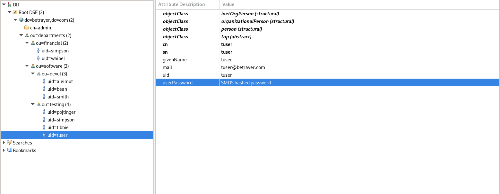
In the following, the bind access is being tested:
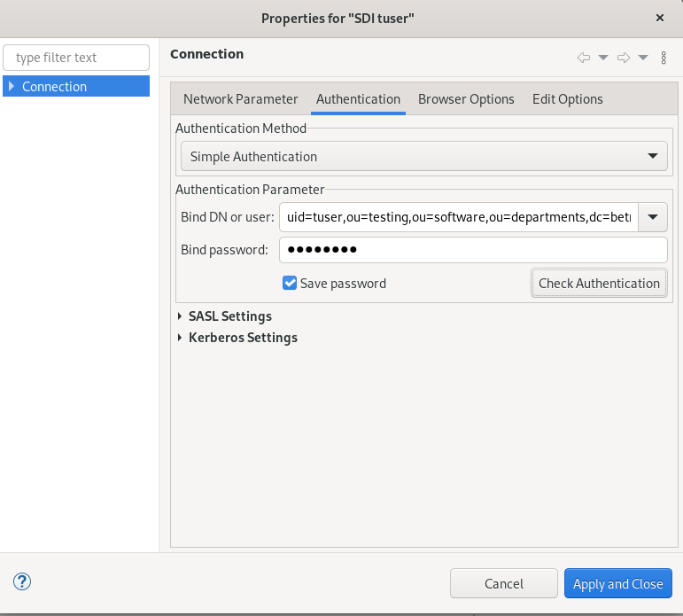
As displayed below, it works:
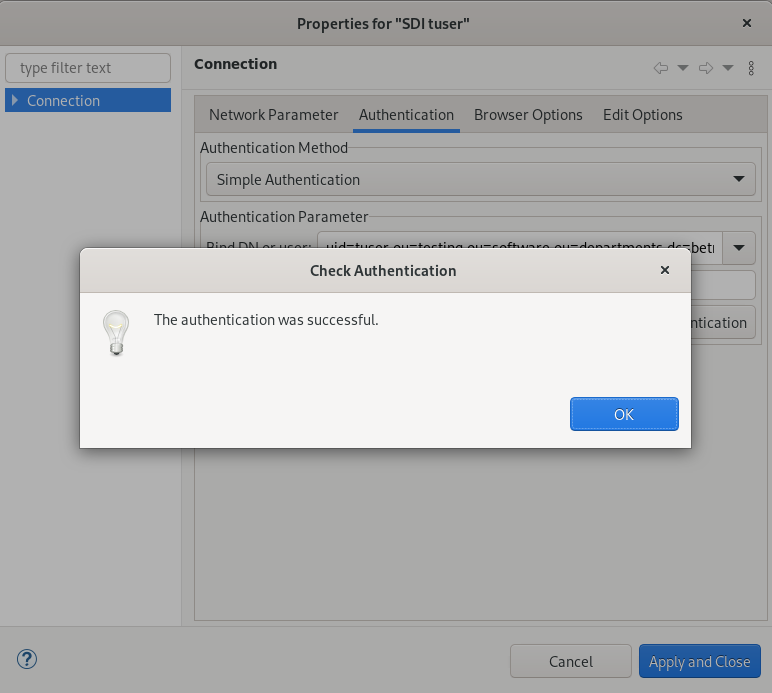
Edit the apache.conf, so the relevant directory looks like the following:
Alias /manual /usr/share/doc/apache2-doc/manual/
<Directory "/usr/share/doc/apache2-doc/manual/">
Options Indexes FollowSymlinks
AuthType Basic
AuthName "Apache LDAP authentication"
AuthBasicAuthoritative Off
AuthBasicProvider ldap
AuthLDAPURL "ldap://141.62.75.101/uid=tuser,ou=testing,ou=software,ou=departments,dc=betrayer,dc=com"
AuthLDAPBindDN "uid=tuser,ou=testing,ou=software,ou=departments,dc=betrayer,dc=com"
AuthLDAPBindPassword password
Require valid-user
AllowOverride None
AddDefaultCharset off
</Directory>
Alias /jw163 /var/www/sdidoc/
<Directory "/var/www/sdidoc/">
Options Indexes FollowSymlinks
AuthType Basic
AuthName "Apache LDAP authentication"
AuthBasicAuthoritative Off
AuthBasicProvider ldap
AuthLDAPURL "ldap://141.62.75.101/uid=tuser,ou=testing,ou=software,ou=departments,dc=betrayer,dc=com"
AuthLDAPBindDN "uid=tuser,ou=testing,ou=software,ou=departments,dc=betrayer,dc=com"
AuthLDAPBindPassword password
Require valid-user
AllowOverride None
AddDefaultCharset off
</Directory>
Enable the authnz_ldap module and make sure that your configuration is enabled:
# a2enmod authnz_ldap
Considering dependency ldap for authnz_ldap:
Enabling module ldap.
Enabling module authnz_ldap.
To activate the new configuration, you need to run:
systemctl restart apache2
Restart the apache service:
# systemctl restart apache2
Now the authentication can be tested:
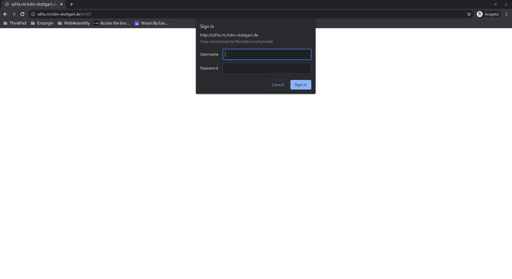
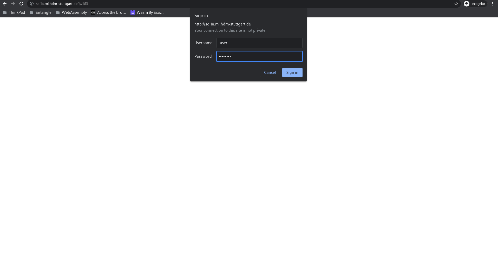
MySQL database administration
# sudo apt install mariadb-servera
# mysql_secure_installation
So far, the mysql_secure_installation script fails with Permission denied. To resolve this issue we have to add some additional configuration regarding lxc.
Create /etc/systemd/system/mariadb.service.d/lxc.conf with the following content:
[Service]
ProtectHome=false
ProtectSystem=false
# These settings turned out to not be necessary in my case, but YMMV
#PrivateTmp=false
#PrivateNetwork=false
PrivateDevices=falsev
Restart:
# systemctl daemon-reload
# systemctl restart mariadb
Now executing the mysql_secure_installation script works.
# mysql_secure_installation
NOTE: RUNNING ALL PARTS OF THIS SCRIPT IS RECOMMENDED FOR ALL MariaDB
SERVERS IN PRODUCTION USE! PLEASE READ EACH STEP CAREFULLY!
In order to log into MariaDB to secure it, we'll need the current
password for the root user. If you've just installed MariaDB, and
haven't set the root password yet, you should just press enter here.
Enter current password for root (enter for none):
OK, successfully used password, moving on...
Setting the root password or using the unix_socket ensures that nobody
can log into the MariaDB root user without the proper authorisation.
You already have your root account protected, so you can safely answer 'n'.
Switch to unix_socket authentication [Y/n] ^C
Aborting!
Cleaning up...
root@sdi1a:/etc/systemd/system/mariadb.service.d# mysql_secure_installation
NOTE: RUNNING ALL PARTS OF THIS SCRIPT IS RECOMMENDED FOR ALL MariaDB
SERVERS IN PRODUCTION USE! PLEASE READ EACH STEP CAREFULLY!
In order to log into MariaDB to secure it, we'll need the current
password for the root user. If you've just installed MariaDB, and
haven't set the root password yet, you should just press enter here.
Enter current password for root (enter for none):
OK, successfully used password, moving on...
Setting the root password or using the unix_socket ensures that nobody
can log into the MariaDB root user without the proper authorisation.
You already have your root account protected, so you can safely answer 'n'.
Switch to unix_socket authentication [Y/n] Y
Enabled successfully!
Reloading privilege tables..
... Success!
You already have your root account protected, so you can safely answer 'n'.
Change the root password? [Y/n] y
New password:
Re-enter new password:
Password updated successfully!
Reloading privilege tables..
... Success!
By default, a MariaDB installation has an anonymous user, allowing anyone
to log into MariaDB without having to have a user account created for
them. This is intended only for testing, and to make the installation
go a bit smoother. You should remove them before moving into a
production environment.
Remove anonymous users? [Y/n] y
... Success!
Normally, root should only be allowed to connect from 'localhost'. This
ensures that someone cannot guess at the root password from the network.
Disallow root login remotely? [Y/n] y
... Success!
By default, MariaDB comes with a database named 'test' that anyone can
access. This is also intended only for testing, and should be removed
before moving into a production environment.
Remove test database and access to it? [Y/n] y
- Dropping test database...
... Success!
- Removing privileges on test database...
... Success!
Reloading the privilege tables will ensure that all changes made so far
will take effect immediately.
Reload privilege tables now? [Y/n] y
... Success!
Cleaning up...
All done! If you've completed all of the above steps, your MariaDB
installation should now be secure.
Thanks for using MariaDB!
Install phpmyadmin:
apt install phpmyadmin libapache2-mod-php
Now phpmyadmin can be reached with sdi1a.mi.hdm-stuttgart.de/phpmyadmin:
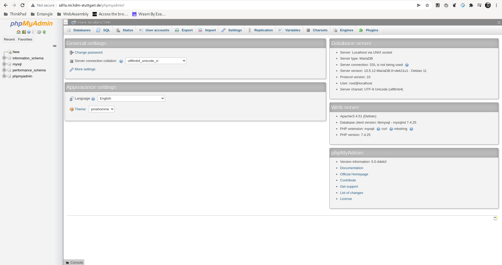
Providing WEB based user management to your LDAP Server
Install LDAP-Account-Manager:
apt install ldap-account-manager
The LDAP-Account-Manager can be reached with sdi1a.mi.hdm-stuttgart.de/lam:
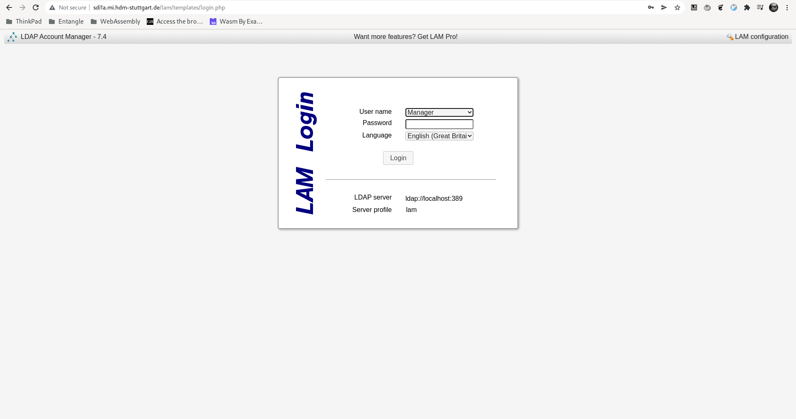
To configure LAM go to the LAM Configuration. The default "Master" password is lam. We changed this password to password.
Publish your documentation
Add DNS-Entry:
; Start of Authority record defining the key characteristicts of this zone
@ IN SOA ns1.mi.hdm-stuttgart.de. hostmaster.mi.hdm-stuttgart.de. (
1 ; Serial
604800 ; Refresh
86400 ; Retry
2419200 ; Expire
86400 ) ; Negative Cache TTL
@ IN NS ns1.mi.hdm-stuttgart.de.
@ IN A 141.62.75.101
@ IN MX 10 mx1.hdm-stuttgart.de.
; A records
www IN A 141.62.75.101
sdi1a.mi.hdm-stuttgart.de. IN A 141.62.75.101
sdi1b.mi.hdm-stuttgart.de. IN A 141.62.75.101
ns1.mi.hdm-stuttgart.de. IN A 141.62.75.101
; CNAME records
www1-1 IN CNAME www
www1-2 IN CNAME www
info IN CNAME www
jw163 IN CNAME www
manual IN CNAME www
doc IN CNAME www
Then add another Alias to your configuration:
Alias /doc /var/www/sdidoc/
<Directory "/var/www/sdidoc/">
Options Indexes FollowSymlinks
Require all granted
AllowedOverride None
AddDefaultCharset off
</Directory>
Restart bind and apache:
# systemctl restart bind9
# systemctl restart apache2
Now the docs should be visible:
MariaDB
MariaDB is a community-developed, commercially supported fork of the MySQL relational database management system (RDBMS), intended to remain free and open-source software under the GNU General Public License1.
From Wikipedia, last checked 2022-02-19 (https://en.wikipedia.org/wiki/MariaDB)
MariaDB Docs
ssh jean@sdi-1.alphahorizon.io
sudo apt update
sudo apt install -y mariadb-server
sudo mysql_secure_installation
# Current password for root: Press enter
# Switch to unix_socket authentication: y
# Change the root password: y
# New password: yourpassword
# Re-enter new password: yourpassword
# Remove anonymous users: y
# Disallow root login remotely: y
# Remove test database and access to it: y
# Reload privilege tables now: y
sudo apt install -y phpmyadmin libapache2-mod-php
# Web server: apache2
# Configure database: Yes
# MySQL application password for phpmyadmin: yourpassword
# Password confirmation: yourpassword
sudo a2disconf phpmyadmin
sudo mysql -u root -e "GRANT ALL PRIVILEGES ON *.* TO 'phpmyadmin'@'localhost' WITH GRANT OPTION;"
sudo phpenmod mbstring
sudo tee /etc/apache2/sites-available/phpmyadmin.sdi-1.alphahorizon.io.conf <<'EOT'
<VirtualHost *:8080>
ServerName sdi-1.alphahorizon.io
ServerAlias phpmyadmin.sdi-1.alphahorizon.io
ServerAdmin webmaster@alphahorizon.io
DocumentRoot /usr/share/phpmyadmin
ErrorLog ${APACHE_LOG_DIR}/error.log
CustomLog ${APACHE_LOG_DIR}/access.log combined
<Directory "/usr/share/phpmyadmin">
Options SymLinksIfOwnerMatch
DirectoryIndex index.php
# limit libapache2-mod-php to files and directories necessary by pma
<IfModule mod_php7.c>
php_admin_value upload_tmp_dir /var/lib/phpmyadmin/tmp
php_admin_value open_basedir /usr/share/phpmyadmin/:/usr/share/doc/phpmyadmin/:/etc/phpmyadmin/:/var/lib/phpmyadmin/:/usr/share/php/:/usr/share/javascript/
</IfModule>
</Directory>
# Disallow web access to directories that don't need it
<Directory "/usr/share/phpmyadmin/templates">
Require all denied
</Directory>
<Directory "/usr/share/phpmyadmin/libraries">
Require all denied
</Directory>
</VirtualHost>
EOT
sudo a2ensite phpmyadmin.sdi-1.alphahorizon.io
sudo systemctl reload apache2
curl https://phpmyadmin.sdi-1.alphahorizon.io/ # Test the phpMyAdmin site
# Visit https://phpmyadmin.sdi-1.alphahorizon.io/ and login as root using yourpassword
LDAP Account Manager
LDAP Account Manager is a web application for managing various account types in an LDAP directory1.
From Wikipedia, last checked 2022-02-19 (https://en.wikipedia.org/wiki/LDAP_Account_Manager)
LDAP Account Manager Docs
ssh jean@sdi-1.alphahorizon.io
sudo apt update
sudo apt install -y ldap-account-manager
sudo a2disconf ldap-account-manager
sudo tee /etc/apache2/sites-available/ldap-account-manager.sdi-1.alphahorizon.io.conf <<'EOT'
<VirtualHost *:8080>
ServerName sdi-1.alphahorizon.io
ServerAlias ldap-account-manager.sdi-1.alphahorizon.io
ServerAdmin webmaster@alphahorizon.io
DocumentRoot /usr/share/ldap-account-manager
ErrorLog ${APACHE_LOG_DIR}/error.log
CustomLog ${APACHE_LOG_DIR}/access.log combined
<Directory "/usr/share/ldap-account-manager">
Options +FollowSymLinks
AllowOverride All
Require all granted
DirectoryIndex index.html
</Directory>
<Directory "/var/lib/ldap-account-manager/tmp">
Options -Indexes
</Directory>
<Directory "/var/lib/ldap-account-manager/tmp/internal">
Options -Indexes
Require all denied
</Directory>
<Directory "/var/lib/ldap-account-manager/sess">
Options -Indexes
Require all denied
</Directory>
<Directory "/var/lib/ldap-account-manager/config">
Options -Indexes
Require all denied
</Directory>
<Directory "/usr/share/ldap-account-manager/lib">
Options -Indexes
Require all denied
</Directory>
<Directory "/usr/share/ldap-account-manager/help">
Options -Indexes
Require all denied
</Directory>
<Directory "/usr/share/ldap-account-manager/locale">
Options -Indexes
Require all denied
</Directory>
</VirtualHost>
EOT
sudo a2ensite ldap-account-manager.sdi-1.alphahorizon.io
sudo systemctl reload apache2
# Visit https://ldap-account-manager.sdi-1.alphahorizon.io/templates/config/mainlogin.php, login with `lam` as the master password
# - Don't encrypt session
# - Use `ldap://localhost:389/` as the server (where `ldaps://` is the default)
# - Set the new master password
# Visit https://ldap-account-manager.sdi-1.alphahorizon.io/templates/config/confmain.php, and login with `lam` as the profile password
# - Set `dc=ldap,dc=sdi-1,dc=alphahorizon,dc=io` as the tree suffix
# - Set `cn=admin,dc=ldap,dc=sdi-1,dc=alphahorizon,dc=io` as the list of valid users
# - Set SSH key file to empty string
# - Set the profile password to yourpassword
# - Set Users LDAP suffix under "Account types" to `ou=devel,ou=software,ou=departments,dc=ldap,dc=sdi-1,dc=alphahorizon,dc=io`
# - Delete "groups" under "Account types"
# Visit https://ldap-account-manager.sdi-1.alphahorizon.io/templates/login.php and login with your the LDAP admin account password
Nextcloud
Nextcloud is a suite of client-server software for creating and using file hosting services1.
From Wikipedia, last checked 2022-02-19 (https://en.wikipedia.org/wiki/Nextcloud)
Nextcloud Docs
ssh jean@sdi-1.alphahorizon.io
sudo apt update
sudo apt install -y libapache2-mod-php php-ctype php-curl php-dom php-gd php-iconv php-json php-xml php-mbstring php-posix php-simplexml php-xmlreader php-xmlwriter php-zip php-mysql php-fileinfo php-bz2 php-intl php-ldap php-ftp php-imap php-bcmath php-gmp php-exif php-apcu php-imagick php-phar ffmpeg libreoffice curl unzip
sudo mysql -u root -e "CREATE USER 'nextcloud'@'localhost' IDENTIFIED BY 'yourpassword';"
sudo mysql -u root -e "CREATE DATABASE nextcloud;"
sudo mysql -u root -e "GRANT ALL PRIVILEGES ON nextcloud.* TO 'nextcloud'@'localhost';"
sudo mysql -u root -e "FLUSH PRIVILEGES;"
sudo tee /etc/php/*/apache2/php.ini <<'EOT'
date.timezone = Europe/Berlin
memory_limit = 1024M
upload_max_filesize = 1024M
post_max_size = 1024M
max_execution_time = 300
EOT
curl -Lo /tmp/nextcloud.zip https://download.nextcloud.com/server/releases/nextcloud-23.0.2.zip
unzip /tmp/nextcloud.zip 'nextcloud/*' -d /tmp/nextcloud
sudo mv /tmp/nextcloud/nextcloud/ /var/www/nextcloud.sdi-1.alphahorizon.io/
sudo chown -R www-data:www-data /var/www/nextcloud.sdi-1.alphahorizon.io/
sudo chmod -R 755 /var/www/nextcloud.sdi-1.alphahorizon.io/
sudo tee /etc/apache2/sites-available/nextcloud.sdi-1.alphahorizon.io.conf <<'EOT'
<VirtualHost *:8080>
ServerName sdi-1.alphahorizon.io
ServerAlias nextcloud.sdi-1.alphahorizon.io
ServerAdmin webmaster@alphahorizon.io
DocumentRoot /var/www/nextcloud.sdi-1.alphahorizon.io
ErrorLog ${APACHE_LOG_DIR}/error.log
CustomLog ${APACHE_LOG_DIR}/access.log combined
<Directory "/var/www/nextcloud.sdi-1.alphahorizon.io">
Options Indexes FollowSymLinks
AllowOverride None
Require all granted
</Directory>
</VirtualHost>
EOT
sudo a2ensite nextcloud.sdi-1.alphahorizon.io
sudo systemctl reload apache2
curl https://nextcloud.sdi-1.alphahorizon.io/ # Test the Nextcloud site
# Visit https://nextcloud.sdi-1.alphahorizon.io/index.php and create an admin account
# - Set `nextcloud` as the database user
# - Set `yourpassword` as the database password
# - Set `nextcloud` as the database name
# - Set `localhost:3306` as the database host
# - Click on "finish setup"
# - Visit https://nextcloud.sdi-1.alphahorizon.io/index.php/core/apps/recommended and click "Install recommended apps"
# - Visit https://nextcloud.sdi-1.alphahorizon.io/index.php/settings/admin/richdocuments and select `Use the built-in CODE - Collabora Online Development Edition`
# - Visit https://nextcloud.sdi-1.alphahorizon.io/index.php/settings/apps/installed/user_ldap and click `Enable`
# - Visit https://nextcloud.sdi-1.alphahorizon.io/index.php/settings/admin/ldap and enter the following:
# - Set `localhost` as the host
# - Set `389` as the port
# - Set `cn=admin,dc=ldap,dc=sdi-1,dc=alphahorizon,dc=io` as the user DN
# - Set the password from `sudo dpkg-reconfigure slapd` as the password
# - Set `dc=ldap,dc=sdi-1,dc=alphahorizon,dc=io` as the base DN
# - Click "verify settings and count users", "continue"
# - Select "cn" under "Other Attributes"
# - Set "bean" as the user name and click "Verify settings", "continue"
# - Set `organizationUnit` under `Only these object classes:` in the groups settings
# - Click `Verify settings and count the groups`
# - Visit https://nextcloud.sdi-1.alphahorizon.io/index.php/login and login as bean using password "password" (if you can't login, go back to https://nextcloud.sdi-1.alphahorizon.io/index.php/settings/admin/ldap and verify everything again)
Nextcloud Exercises
Installation
# apt update
# apt -y install mariadb-server mariadb-client
Configure mysql using the installation script, set a root password, disable remote login and remove test databases.
# mysql_secure_installation
Ensure the password is required to access MySQL CLI as root user:
# mysql -u root
UPDATE mysql.user SET plugin = 'mysql_native_password' WHERE User = 'root';
FLUSH PRIVILEGES;
# mysql -u root -p
CREATE USER 'jakob'@'locahost' IDENTIFIED BY 'password';
CREATE DATABASE nextcloud;
GRANT ALL PRIVILEGES ON nextcloud.* 'jakob'@'localhost';
FLUSH PRIVILEDGES;
QUIT
Install PHP and Apache web server. In our case Apache is already installed.
apt -y install php php-{cli,xml,zip,curl,gd,cgi,mysql,mbstring}
apt -y install apache2 libapache2-mod-php
Configure PHP variables:
vim /etc/php/*/apache2/php.ini
date.timezone = Europe/Berlin
memory_limit = 512M
upload_max_filesize = 500M
post_max_size = 500M
max_execution_time = 300
Restart apache:
systemctl restart apache2
Download nextcloud, curl and unzip:
apt -y install curl unzip
curl -o nextcloud-22.zip https://download.nextcloud.com/server/releases/latest-22.zip
unzip nextcloud-22.zip
mv nextcloud /var/www/
chown -R www-data:root /var/html/nextcloud
chmod -R 755 /var/www/nextcloud
Add the nextcloud directory to our config:
Alias /nextcloud "/var/www/nextcloud/"
<Directory "/var/www/nextcloud/">
Require all granted
AllowOverride None
Options Indexes Multiviews
<IfModule mod_dav.c>
Dav off
</IfModule>
</Directory>
Create a new virtual host:
<VirtualHost *:80>
ServerAdmin jw163@hdm-stuttgart.de
DocumentRoot /var/www/nextcloud
ServerName mi.hdm-stuttgart.de
ServerAlias nextcloud.mi.hdm-stuttgart.de
ErrorLog ${APACHE_LOG_DIR}/error.log
CustomLog ${APACHE_LOG_DIR}/access.log combined
</VirtualHost>
Restart apache2:
# systemctl restart apache2
Now, nextcloud can be configured using the web interface:
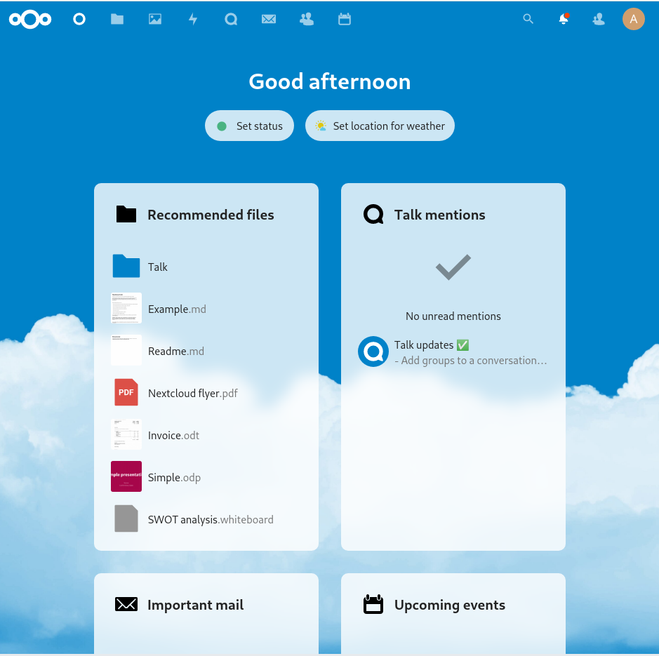
LDAP Authentication
After enabling the LDAP plugin, you can configure it and test login with one of your users. As can be seen in the following screenshot, we can login using one of our custom users:
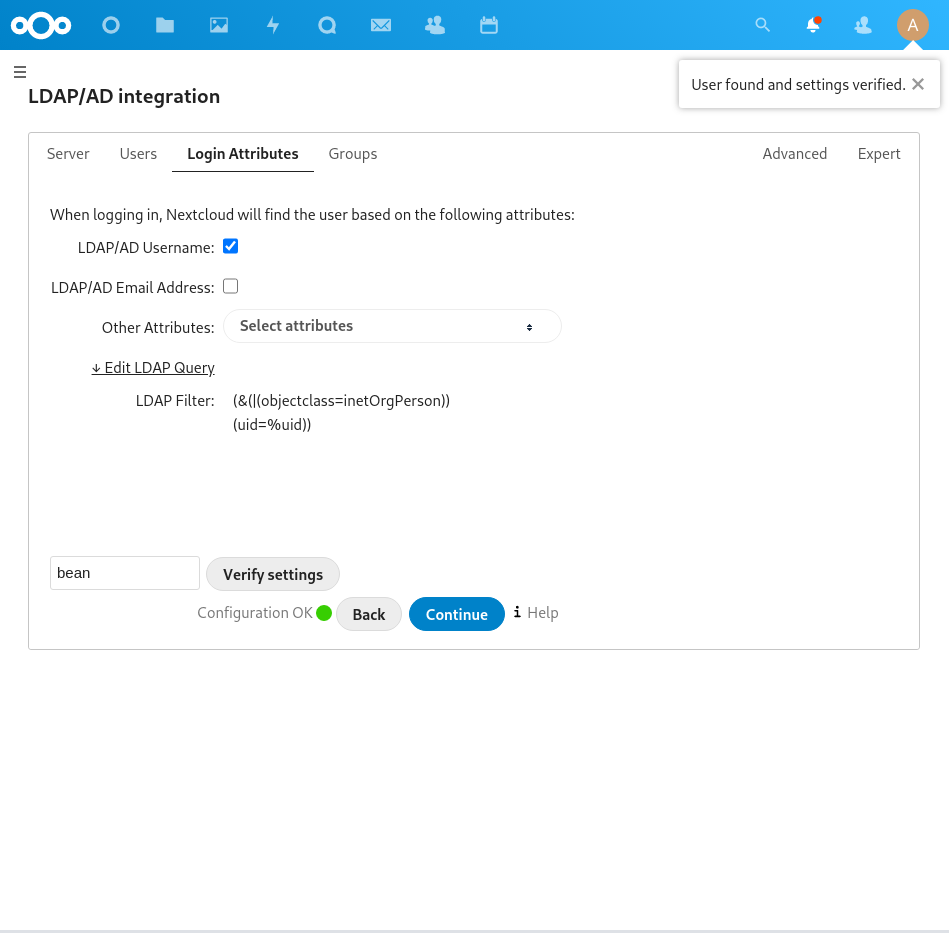
Prometheus
Prometheus is a free software application used for event monitoring and alerting1.
From Wikipedia, last checked 2022-02-19 (https://en.wikipedia.org/wiki/Prometheus_(software))
Prometheus Docs
ssh jean@sdi-1.alphahorizon.io
sudo apt update
sudo apt install -y prometheus
echo 'ARGS="--web.listen-address=localhost:9091"' | sudo tee /etc/default/prometheus
sudo systemctl enable --now prometheus
sudo tee /etc/prometheus/prometheus.yml <<'EOT'
global:
scrape_interval: 15s
evaluation_interval: 15s
external_labels:
monitor: 'example'
alerting:
alertmanagers:
- static_configs:
- targets: ['localhost:9093']
rule_files:
scrape_configs:
- job_name: 'prometheus'
scrape_interval: 5s
scrape_timeout: 5s
static_configs:
- targets: ['localhost:9090']
- job_name: node
static_configs:
- targets: ['localhost:9100']
- job_name: traefik
static_configs:
- targets: ['localhost:8082']
EOT
sudo systemctl reload prometheus
curl http://localhost:9091/metrics # Test Prometheus
Prometheus Exercises
TODO: Add exercises
Grafana
Grafana is a multi-platform open source analytics and interactive visualization web application1.
From Wikipedia, last checked 2022-02-19 (https://en.wikipedia.org/wiki/Grafana)
Grafana Docs
ssh jean@sdi-1.alphahorizon.io
sudo apt update
sudo apt install -y apt-transport-https software-properties-common
curl -L https://packages.grafana.com/gpg.key | sudo apt-key add -
echo 'deb https://packages.grafana.com/oss/deb stable main' | sudo tee -a /etc/apt/sources.list.d/grafana.list
sudo apt update
sudo apt install -y grafana
sudo systemctl enable --now grafana-server
sudo vi /etc/grafana/grafana.ini
# Replace the `[server]` block with the following:
[server]
http_port = 3001
# Replace the `[auth.ldap]` block with the following:
[auth.ldap]
enabled = true
config_file = /etc/grafana/ldap.toml
allow_sign_up = true
# Replace the `[log]` block with the following:
[log]
filters = ldap:debug
# Replace the `[smtp]` block with the following:
[smtp]
enabled = true
host = mail.gandi.net:465
user = sdi-1@alphahorizon.io
password = yourpassword
from_address = jeans-grafana@alphahorizon.io
from_name = Grafana
ehlo_identity = grafana.sdi-1.alphahorizon.io
sudo tee /etc/grafana/ldap.toml <<'EOT'
[[servers]]
host = "127.0.0.1"
port = 389
use_ssl = false
start_tls = false
ssl_skip_verify = false
bind_dn = "cn=admin,dc=ldap,dc=sdi-1,dc=alphahorizon,dc=io"
bind_password = 'yourpassword'
search_filter = "(uid=%s)"
#search_base_dns = ["dc=ldap,dc=sdi-1,dc=alphahorizon,dc=io"] # If we were to use groups
search_base_dns = ["ou=ops,ou=software,ou=departments,dc=ldap,dc=sdi-1,dc=alphahorizon,dc=io"]
[servers.attributes]
name = "givenName"
surname = "sn"
username = "cn"
member_of = "memberOf"
email = "email"
# Would be useful if we were to use groups
#[[servers.group_mappings]]
#group_dn = "ou=ops,ou=software,ou=departments,dc=ldap,dc=sdi-1,dc=alphahorizon,dc=io"
#org_role = "Admin"
#
#[[servers.group_mappings]]
#group_dn = "ou=ops,ou=software,ou=departments,dc=ldap,dc=sdi-1,dc=alphahorizon,dc=io"
#org_role = "Editor"
#
#[[servers.group_mappings]]
#group_dn = "*"
#org_role = "Viewer"
[[servers.group_mappings]]
group_dn = "*"
org_role = "Admin"
EOT
sudo systemctl restart grafana-server
curl https://grafana.sdi-1.alphahorizon.io/ # Test the Grafana site
# Visit https://grafana.sdi-1.alphahorizon.io/ and login as `operator` using the password from LDAP; they will be admin. If we had set up roles, logging in as `bean` using `password` would make them a viewer.
# - Go to configuration, add a datasource and select Prometheus and use `http://localhost:9091` as the URL
# - Go to create, import and select `1860` as the ID (https://grafana.com/grafana/dashboards/1860), then select Prometheus as the data source
# - Go to create, folder and set `Main` as the name
# - Go to alerting, create alert with name `HostDiskWillFillIn24Hours`, type `Grafana managed alert` and folder `Mail` using the following query: `(node_filesystem_avail_bytes * 100) / node_filesystem_size_bytes < 10 and ON (instance, device, mountpoint) predict_linear(node_filesystem_avail_bytes{fstype!~"tmpfs"}[1h], 24 * 3600) < 0 and ON (instance, device, mountpoint) node_filesystem_readonly == 0`, `Host disk will fill in 24 hours (instance {{ $labels.instance }})` as the summary, `Filesystem is predicted to run out of space within the next 24 hours at current write rate\n VALUE = {{ $value }}\n LABELS: {{ $labels }}` as description and `serverity=warning` as the labels.
# - Go to https://grafana.sdi-1.alphahorizon.io/alerting/notifications/receivers/grafana-default-email/edit?alertmanager=grafana, enter your Email, and click on "Test". Now check your inbox, a test mail should have arrived.
# - Go to create, import and select `4475` as the ID (https://grafana.com/grafana/dashboards/4475), go to dashboard settings and select `apache@file` as the service
Grafana Exercises
TODO: Add exercises